<!doctype html>
<html lang="en">
<head>
  <meta charset="utf-8">
  <meta name="viewport" content="width=device-width, initial-scale=1">
  <title>arxiv digest — 2026-08-19</title>
  <style>
:root {
  --bg: #ffffff;
  --fg: #1f2328;
  --muted: #59636e;
  --border: #d0d7de;
  --card: #f6f8fa;
  --link: #0969da;
}
body {
  max-width: 980px;
  margin: 0 auto;
  padding: 2rem 1rem 5rem;
  font-family: -apple-system, BlinkMacSystemFont, "Segoe UI", Helvetica, Arial, sans-serif;
  line-height: 1.55;
  color: var(--fg);
  background: var(--bg);
}
a { color: var(--link); }
img { max-width: 100%; height: auto; }
pre, code { background: var(--card); border-radius: 6px; }
pre { padding: 1rem; overflow-x: auto; }
blockquote { border-left: 4px solid var(--border); padding-left: 1rem; color: var(--muted); }
details { margin: 0.6rem 0; }
summary { cursor: pointer; font-weight: 600; }
.paper-figures-scroll {
  display: flex;
  gap: 1rem;
  overflow-x: auto;
  overscroll-behavior-x: contain;
  padding: 0.75rem 0.25rem 1rem;
  margin: 1rem 0 1.25rem;
  border-top: 1px solid var(--border);
  border-bottom: 1px solid var(--border);
  scroll-snap-type: x proximity;
}
.paper-figure-card {
  flex: 0 0 min(260px, 72vw);
  scroll-snap-align: start;
  background: var(--card);
  border: 1px solid var(--border);
  border-radius: 12px;
  padding: 0.55rem;
}
.paper-figure-card img {
  display: block;
  width: 100%;
  max-height: 240px;
  object-fit: contain;
  background: white;
  border-radius: 8px;
}
.paper-figure-caption {
  display: block;
  margin-top: 0.5rem;
  color: var(--muted);
  font-size: 0.85rem;
}
.figure-strip-hint {
  color: var(--muted);
  font-size: 0.9rem;
  margin-bottom: -0.3rem;
}
</style>
  <!-- MathJax: renders $...$ inline math and $$...$$ display math, plus
       \(...\) and \[...\]. Loaded from the official CDN; works offline
       once cached. Configured to skip code/pre blocks so arxiv IDs that
       look like dollar amounts don't get mangled. -->
  <script>
    window.MathJax = {
      tex: {
        inlineMath: [['$', '$'], ['\\(', '\\)']],
        displayMath: [['$$', '$$'], ['\\[', '\\]']],
        processEscapes: true,
        processEnvironments: true
      },
      options: {
        skipHtmlTags: ['script', 'noscript', 'style', 'textarea', 'pre', 'code'],
        ignoreHtmlClass: 'tex2jax_ignore',
        processHtmlClass: 'tex2jax_process'
      }
    };
  </script>
  <script id="MathJax-script" async
    src="https://cdn.jsdelivr.net/npm/mathjax@3/es5/tex-chtml.js"></script>
</head>
<body>
<header style="background-color: #333; color: white; padding: 15px; margin-bottom: 20px;">
  <h1 style="margin: 0; font-size: 24px;">
    <a href="https://ochelpan.github.io/arXiv_clean/" style="color: white; text-decoration: none;">Main</a>
  </h1>
</header>

<h1>Daily arXiv Report</h1>

<hr>
<p>
<a href="index.html">← Index</a>
 · <a href="papers_08.html">← Previous</a> · <a href="papers_10.html">Next →</a>
</p>
<hr>

<h2>Papers 161–180</h2>
<p><a id="paper-2608.16660"></a></p>
<h3 id="topological-insulator-realization-induced-by-fermionic-interaction-through-bf-mediators"><a href="http://arxiv.org/abs/2608.16660v1">Topological insulator realization induced by fermionic interaction through BF mediators</a></h3>
<p><strong>Authors:</strong> G. B. de Gracia, R. da Rocha, A. A. Nogueira, M. A. C. de Barcelos<br>
<strong>Type:</strong> theory · <strong>Category:</strong> other · <strong>PDF:</strong> <a href="https://arxiv.org/pdf/2608.16660v1">https://arxiv.org/pdf/2608.16660v1</a><br>
<strong>Analysis basis:</strong> full PDF text, analyzed in chunks
<strong>Topic relevance:</strong> <code>Keldysh / 2PI / non-Gaussian methods</code> <strong>3/5</strong> · <code>driven-dissipative phase transition</code> <strong>2/5</strong> · <code>analog quantum simulation</code> <strong>1/5</strong> · <code>correlated / nonlocal dissipation</code> <strong>1/5</strong> · <code>methods for driven-dissipative</code> <strong>1/5</strong> · <code>quantum measurements</code> <strong>1/5</strong></p>
<div class="figure-strip-hint">↔ Scroll figures horizontally</div>
<div class="paper-figures-scroll">
<figure class="paper-figure-card">
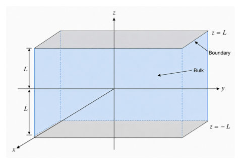
<figcaption class="paper-figure-caption"><b>Fig 1.</b> FIG. 1. The figure highlights our general setup. In our approximation, we consider a compactification in the axial coordinate, with the remaining dimensions infinite. The field theory is defined within the bulk and its boundaries.</figcaption>
</figure>
<figure class="paper-figure-card">
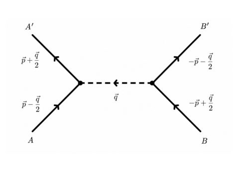
<figcaption class="paper-figure-caption"><b>Fig 2.</b> FIG. 2. Momentum assignment in the evaluation of one of the diagrams contributing to the tree-level scattering am- plitude between boundary quasi-particles A and B. In the center-of-mass frame, particle A scatters from momentum ⃗p−⃗q/2 to ⃗p+⃗q/2, whereas particle B scatters from −⃗p+⃗q/2 to −⃗p −⃗q/2. The dashed internal line represents the exchanged BF boson carrying momentum ⃗q. It is worth highlighting that each vertex has an implicit different structure in this schematic representation.</figcaption>
</figure>
</div>

<p><strong>Summary.</strong> This theoretical work demonstrates that coupling ordinary fermions to BF gauge fields induces a non-trivial topological structure analogous to 3D Topological Insulators. By analyzing the resulting effective interaction potential between boundary quasi-particles, the authors predict characteristic spin-orbit couplings and analyze how these topological features behave under dimensional reduction into thin films.</p>
<p><strong>Why it may be interesting.</strong> The connection drawn between fundamental field theory interactions (BF mediators) and emergent topological phenomena in condensed matter systems like TIs is highly relevant for understanding novel quantum materials.</p>
<details>
<summary>Detailed structure</summary>
<p><strong>Main problem.</strong> The paper investigates how ordinary fermions interacting via a BF mediator can acquire non-trivial topological properties, drawing parallels to three-dimensional Topological Insulators (TIs). It specifically analyzes the resulting effective interactions between boundary quasi-particles.</p>
<p><strong>Main result.</strong> The renormalized fermionic structure inherits topological features leading to gapless helical near-boundary modes. The analysis reveals complex spin-dependent forces and shows how these topological signatures can break down in the thin-film limit.</p>
<p><strong>Method.</strong> The study employs path integral techniques, one-loop self-energy calculations, and a low-momentum effective field theory approach (Born approximation) to derive interaction potentials between boundary modes.</p>
<p><strong>Model / system.</strong> The model consists of fermionic fields coupled to bosonic BF mediator fields. The analysis is framed in the context of 3D TIs, considering finite-size effects via compactification in one axial direction.</p>
<p><strong>Key observables.</strong> Gapless helical near-boundary modes, effective potential for inter-quasi-particle interactions, spin-orbit coupling signatures, and renormalized fermionic dispersion relations.</p>
<p><strong>Important parameters / regimes.</strong> Finite-size effects (compactification length $L$), low momentum transfer ($|\vec{q}| \ll |\vec{p}|$ ), and the BF coupling constants.</p>
<p><strong>Assumptions / limitations.</strong> The theory is treated as an effective continuous description, despite being non-renormalizable. Approximations include using the Born approximation for scattering and assuming transverse sector dominance in loop calculations.</p>
<p><strong>Figures summary.</strong> Figure 1 illustrates the general setup involving bulk regions and boundaries for compactification. Figure 2 shows momentum assignment for evaluating the scattering amplitude in the center-of-mass frame.</p>
<p><strong>Paper structure.</strong> The paper progresses from establishing the full action and gauge symmetries, through calculating one-loop self-energies and renormalization procedures (Chunk 2), to deriving the effective interaction potential between boundary modes using low-energy approximations (Chunk 3).</p>
</details>
<details>
<summary>Abstract</summary>
<p>This paper demonstrates that ordinary fermions, interacting via a BF mediator, form a renormalized structure with non-trivial topological properties. We explore the analogy between the renormalized fermion and a subset of real three-dimensional topological insulators (TIs) in the vicinity of their single Dirac cones. Using the typical magnitude of TI lattice and gaps, we constrain model parameters. The topological structure induced by radiative corrections enters a class of modified Dirac equations, ensuring the existence of helical gapless near-boundary modes. We derive an effective potential for inter-quasi-particle interactions that incorporates finite-size effects in the axial direction, revealing signatures of spin-orbit coupling and time-reversal invariance. Remarkably, particles with different spins do not interact via the characteristic spin-orbit coupling, and a non-central spin-dependent force arises. We also address the behavior of the system in the phase transition associated with the thin-film limit.</p>
</details>
<p><sub><a href="#top">↑ back to top</a></sub></p>

<p><a id="paper-2608.15330"></a></p>
<h3 id="tracking-chirality-during-molecular-motor-photoisomerization-via-simulated-time-resolved-circular-dichroism"><a href="http://arxiv.org/abs/2608.15330v1">Tracking Chirality during Molecular Motor Photoisomerization via Simulated Time-Resolved Circular Dichroism</a></h3>
<p><strong>Authors:</strong> Leonardo Biancorosso, Ali Hassanali, Mauro Stener, Emanuele Coccia, Marta Monti, Gonzalo Díaz Mirón<br>
<strong>Type:</strong> theory · <strong>Category:</strong> other · <strong>PDF:</strong> <a href="https://arxiv.org/pdf/2608.15330v1">https://arxiv.org/pdf/2608.15330v1</a><br>
<strong>Analysis basis:</strong> full PDF text, analyzed in chunks
<strong>Topic relevance:</strong> <code>Keldysh / 2PI / non-Gaussian methods</code> <strong>3/5</strong> · <code>methods for driven-dissipative</code> <strong>3/5</strong> · <code>quantum measurements</code> <strong>2/5</strong> · <code>driven-dissipative phase transition</code> <strong>1/5</strong></p>
<div class="figure-strip-hint">↔ Scroll figures horizontally</div>
<div class="paper-figures-scroll">
<figure class="paper-figure-card">
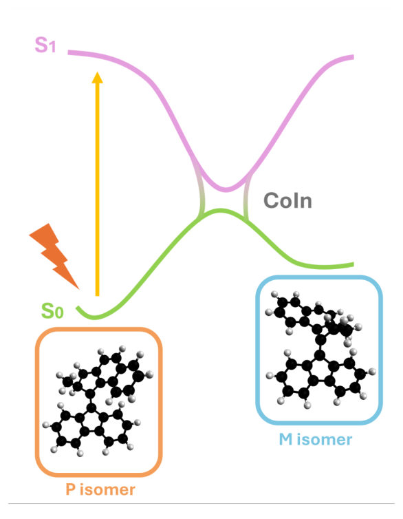
<figcaption class="paper-figure-caption"><b>Fig 1.</b> Figure 1: Schematic representation of the photoisomerization process in the second genera- tion motor. Photoexcitation of the P isomer promote the system to the first excited-state S1. The relaxation proceeds through a conical intersection (CoIn), from which the molecule can decay back to S0 yielding either the P or the M isomer.</figcaption>
</figure>
<figure class="paper-figure-card">
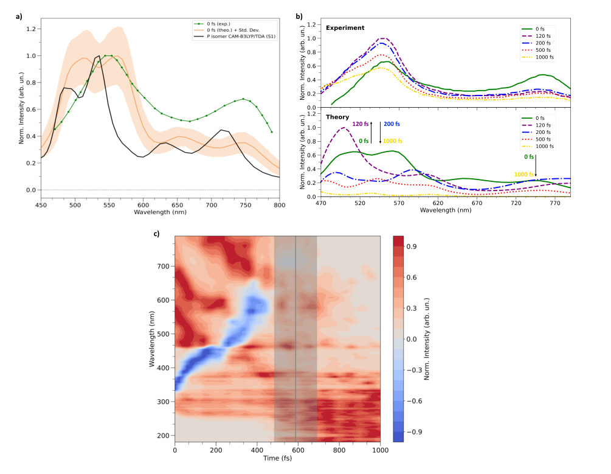
<figcaption class="paper-figure-caption"><b>Fig 2.</b> Figure 2: TA response. (a) Experimental (Exp.) excited-state absorption at t = 0 (green line), compared with the theoretical (theo.) excited-state absorption at t = 0 averaged over all initial conditions (orange line: mean, orange shaded region: standard deviation) and with the excited-state absorption of the optimized ground-state geometry (black line). (b) Comparison between experimental and calculated transient absorption spectra at rep- resentative times along the photodynamics, averaged over the full trajectory ensemble. (c) Two-dimensional transient absorption map calculated along the NAMD trajectories. The gray vertical line indicates the mean hopping time and the shadow region its...</figcaption>
</figure>
<figure class="paper-figure-card">
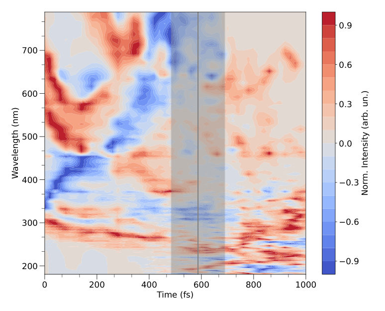
<figcaption class="paper-figure-caption"><b>Fig 3.</b> Figure 3: Two-dimensional map of the calculated TRCD response along the NAMD tra- jectories. The x-axis reports the simulation time at which the molecular geometries were extracted, the y-axis corresponds to the wavelength, and the color scale represents the nor- malized spectral intensity. The gray vertical line and shaded region indicate the mean S1 → S0 decay time and its standard deviation.</figcaption>
</figure>
<figure class="paper-figure-card">
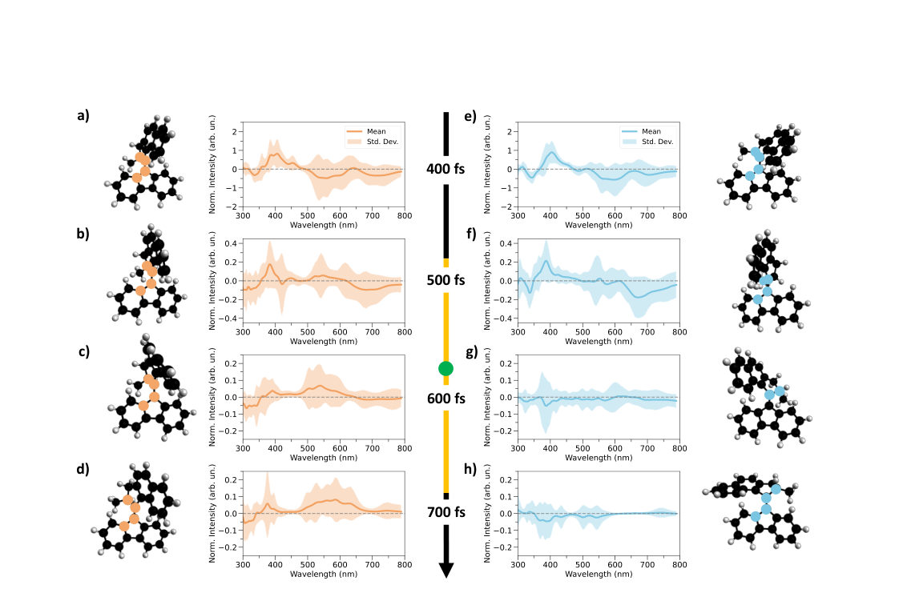
<figcaption class="paper-figure-caption"><b>Fig 4.</b> Figure 4: Trajectory-resolved time-dependent electronic circular dichroism (ECD). (a–d) Mean normalized ECD spectra (solid lines) with standard deviation (shaded area) computed along the trajectories associated with the P isomer (orange) with representative molecular structures shown on the left. (e–h) Same for the trajectories associated with the M isomer (blue), with representative structures shown on the right. Spectra are shown in the 300–800 nm range. The central timeline indicates the temporal progression of the dynamics; the green dot marks the mean S1 →S0 transition time and the yellow bar the corresponding standard deviation.</figcaption>
</figure>
</div>

<p><strong>Summary.</strong> The paper introduces a novel computational framework to simulate Time-Resolved Circular Dichroism (TRCD) during the photoisomerization of a molecular motor. By analyzing nonadiabatic dynamics trajectories, the authors demonstrate that TRCD can distinguish between different photoproduct pathways ($ ext{P}$ vs. $   ext{M}$) based on unique chiroptical signatures. This offers a powerful, real-time tool for probing stereochemical branching in ultrafast photochemical processes.</p>
<p><strong>Why it may be interesting.</strong> This work is highly relevant as it merges advanced quantum dynamics simulations (TDDFT/NAMD) with chiral spectroscopy (CD/ECD) to provide a real-time, mechanism-specific probe of molecular structure changes in excited states, which is central to AMO physics and quantum optics.</p>
<details>
<summary>Detailed structure</summary>
<p><strong>Main problem.</strong> The primary challenge addressed is developing a method to track molecular chirality during ultrafast photoisomerization processes, as standard spectroscopic techniques are often blind to stereochemical differences.</p>
<p><strong>Main result.</strong> Simulating Time-Resolved Circular Dichroism (TRCD) successfully resolves the stereochemical branching pathways ($  ext{P}$ vs. $   ext{M}$ isomers), showing distinct chiroptical signatures for each product pathway.</p>
<p><strong>Method.</strong> The study employs a computational framework combining Nonadiabatic Molecular Dynamics (NAMD) simulations with real-time propagation of electronic wavefunctions to calculate ensemble-averaged TRCD spectra.</p>
<p><strong>Model / system.</strong> The system modeled is a second-generation molecular motor undergoing photoisomerization ($  ext{P} 
ightleftharpoons    ext{M}$ isomer). The dynamics are simulated through excited states ($S_1$) and conical intersections (CoIn) on the potential energy surface.</p>
<p><strong>Key observables.</strong> Time-resolved electronic circular dichroism (TRCD) response, transient absorption (TA) spectra, and the evolution of chiral electronic structure signatures in the visible region.</p>
<p><strong>Important parameters / regimes.</strong> Ultrafast time scales ($\sim 100$ fs to $1000$ fs), excitation wavelengths, and the specific molecular geometry changes associated with isomer formation.</p>
<p><strong>Assumptions / limitations.</strong> The simulation uses a vacuum dynamics model which neglects solvent friction, potentially underestimating the true excited-state decay lifetime compared to solution measurements. The computational protocol is validated against existing experimental data.</p>
<p><strong>Figures summary.</strong> Figures illustrate the photoisomerization schematic and compare TA responses (experimental vs. simulated). Crucially, other figures show trajectory-resolved time-dependent ECD spectra for both P and M isomers across various time points and spectral ranges.</p>
<p><strong>Paper structure.</strong> The paper establishes the limitation of current ultrafast techniques regarding chirality detection. It then introduces the TRCD simulation framework applied to molecular motor photoisomerization, presenting results that decompose the signal into isomer-specific contributions by analyzing trajectory ensembles.</p>
</details>
<details>
<summary>Abstract</summary>
<p>Ultrafast spectroscopic techniques are widely used to investigate photoinduced processes, yet they remain largely blind to molecular chirality. Here we introduce a framework for simulating time-resolved electronic circular dichroism (TRCD) along an ensemble of nonadiabatic molecular dynamics, and apply it to the photoisomerization of a second-generation molecular motor[1]. While transient absorption captures the overall excited-state dynamics, it cannot distinguish the two photoproduct pathways. The TRCD response, by contrast, resolves the stereochemical branching: trajectories returning to the stable P isomer (right-handed helix) retain a distinct chiroptical band in the visible region, whereas those forming the M isomer (leftl-handed helix) become chiroptically dark as they twist through the conical intersection. This asymmetry constitutes a directly measurable signature of the stereochemical branching, offering a real-time probe of the formation of molecular chirality and concrete predictions for future TRCD experiments.</p>
</details>
<p><sub><a href="#top">↑ back to top</a></sub></p>

<p><a id="paper-2608.15596"></a></p>
<h3 id="observation-of-nonlocal-ferron-drag-thermoelectricity"><a href="http://arxiv.org/abs/2608.15596v1">Observation of nonlocal ferron-drag thermoelectricity</a></h3>
<p><strong>Authors:</strong> Takuma Itoh, Takamasa Hirai, Ping Tang, Hossein Sepehri-Amin, Ryo Iguchi, Yusuke Kozuka, Takao Shimizu, Soshi Akita, Shunsuke Mori, Gerrit E. W. Bauer, Ken-ichi Uchida<br>
<strong>Type:</strong> both · <strong>Category:</strong> other · <strong>PDF:</strong> <a href="https://arxiv.org/pdf/2608.15596v1">https://arxiv.org/pdf/2608.15596v1</a><br>
<strong>Analysis basis:</strong> full PDF text, analyzed in chunks
<strong>Topic relevance:</strong> <code>Keldysh / 2PI / non-Gaussian methods</code> <strong>3/5</strong> · <code>methods for driven-dissipative</code> <strong>2/5</strong> · <code>analog quantum simulation</code> <strong>1/5</strong> · <code>correlated / nonlocal dissipation</code> <strong>1/5</strong> · <code>quantum measurements</code> <strong>1/5</strong></p>
<div class="figure-strip-hint">↔ Scroll figures horizontally</div>
<div class="paper-figures-scroll">
<figure class="paper-figure-card">
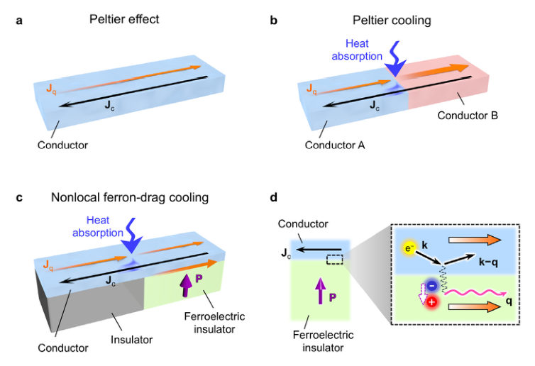
<figcaption class="paper-figure-caption"><b>Fig 1.</b> Fig. 1 | Peltier cooling and nonlocal ferron-drag cooling. a, Schematic of the Peltier effect in a single, homogeneous</figcaption>
</figure>
<figure class="paper-figure-card">
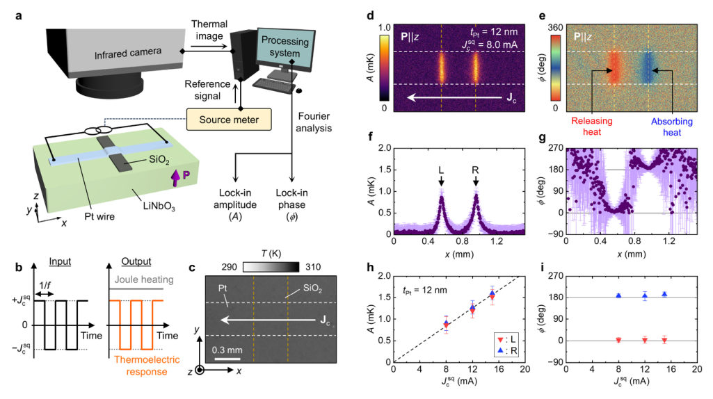
<figcaption class="paper-figure-caption"><b>Fig 2.</b> Fig. 2 | Experimental set-up and thermoelectric response in Pt/LiNbO3. a, Schematic of the lock-in thermography</figcaption>
</figure>
<figure class="paper-figure-card">
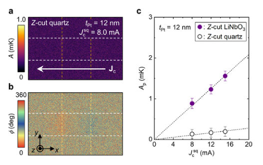
<figcaption class="paper-figure-caption"><b>Fig 3.</b> Fig. 3 | Substrate dependence. a,b, A (a) and  (d) images of the Pt/Z-cut quartz sample with 𝑡୔୲ = 12 nm at 𝐽ୡ ୱ୯ =</figcaption>
</figure>
<figure class="paper-figure-card">
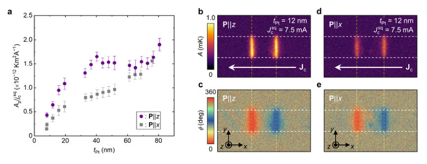
<figcaption class="paper-figure-caption"><b>Fig 4.</b> Fig. 4 | Pt-thickness and polarization-direction dependences. a, 𝑡୔୲ dependence of 𝐴୮𝑗ୡ ୱ୯ ⁄ for the Pt/Z-cut LiNbO3</figcaption>
</figure>
<figure class="paper-figure-card">
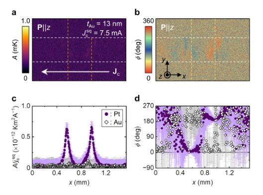
<figcaption class="paper-figure-caption"><b>Fig 5.</b> Fig. 5 | Comparison between Pt/LiNbO3 and Au/LiNbO3. a,b, A (a) and  (b) images for the Au/Z-cut LiNbO3</figcaption>
</figure>
</div>

<p><strong>Summary.</strong> This research reports the observation and theoretical analysis of a nonlocal thermoelectric effect called ferron-drag, occurring at the interface between metals and ferroelectric insulators. The key finding is that this heat transfer mechanism depends critically on the ferroelectric polarization and is mediated by acoustic phonons coupling electrons to electric polarization excitations (ferrons). This has implications for designing advanced thermoelectric devices.</p>
<p><strong>Why it may be interesting.</strong> The mechanism involves coupling between electronic excitations (conduction electrons) and collective lattice/polarization modes (ferrons) mediated by phonons, which touches upon concepts of coupled quantum oscillators and energy transport in complex solid-state systems.</p>
<details>
<summary>Detailed structure</summary>
<p><strong>Main problem.</strong> The study investigates observing nonlocal heat absorption/release signals (thermoelectric effect) in a homogeneous metal placed near a ferroelectric insulator, specifically quantifying the 'nonlocal ferron-drag thermoelectricity.'</p>
<p><strong>Main result.</strong> They confirmed that the temperature change signal is dependent on the ferroelectric order and exhibits long-range behavior, suggesting phonon-mediated coupling between conduction electrons and electric polarization excitations (ferrons).</p>
<p><strong>Method.</strong> The work combines active thermographic imaging (LIT) experiments with theoretical modeling using the linearized Boltzmann equation to derive the nonlocal ferron-drag coefficient.</p>
<p><strong>Model / system.</strong> The physical system is a hybrid structure, such as Pt films on ferroelectric $  ext{LiNbO}_3$ substrates, sometimes separated by an $   ext{SiO}_2$ spacer. The theory models coupling via electron-phonon and electron-ferron interactions.</p>
<p><strong>Key observables.</strong> Temperature change signals ($\Delta T$), thermoelectric signal amplitude ($A$), phase shift ($\phi$), and the nonlocal ferron-drag coefficient ($\Pi_{	ext{frr}}$).</p>
<p><strong>Important parameters / regimes.</strong> Metal thickness ($t_{Pt}$), spacer barrier thickness ($t_{SiO_2}$), ferroelectric polarization direction (Z-cut vs. X-cut), and current amplitude ($J_{\omega}^{ac}$).</p>
<p><strong>Assumptions / limitations.</strong> The analysis assumes the heat source is localized at boundaries due to nonlocal effects, and that the $  ext{SiO}_2$ spacer primarily increases distance without introducing significant additional phonon scattering.</p>
<p><strong>Figures summary.</strong> Figures illustrate temperature maps showing boundary signals in ferroelectric vs. non-ferroelectric substrates; they also show dependence of signals on Pt thickness, spacer thickness, and substrate thermal conductivity ($\kappa$).</p>
<p><strong>Paper structure.</strong> The paper progresses from initial experimental observation of the effect in $  ext{Pt}/    ext{LiNbO}_3$ (Chunk 1), to systematic investigation of ferroelectric vs. non-ferroelectric dependence and thickness scaling (Chunk 2), followed by theoretical modeling incorporating phonon mediation and spacer effects (Chunks 3 &amp; 4).</p>
</details>
<details>
<summary>Abstract</summary>
<p>The Peltier effect induces a heat current when a charge current passes through a conductor. Since a charge current is conserved at the junction between two different conductors, the difference between the heat flowing in both conductors for the same charge current leads to heating or cooling of the interface, providing an operating mechanism of solid-state heat pumps. Here, we report observation of heat absorption and release signals even in a junction-free, homogeneous metal when placed in proximity to a ferroelectric insulator. Our experiments using active thermographic imaging techniques confirm the prediction of the ferron-drag effect, i.e., the nonlocal excitation of ferrons, the collective excitation of the ferroelectric order, by conduction electrons in the adjacent metal. We reveal the electric-polarization-direction dependence of the temperature change signals and their unexpected increase with the metal thickness beyond the charge screening length, uncovering additional electron-phonon-ferron interactions in the metal/ferroelectric hybrid structure. The discovery of crosstalk between metals and ferroelectrics via remote ferrons could become both a nuisance and an opportunity for highly integrated circuits with ferroelectric barrier materials and revolutionize the design architecture of thermoelectric devices.</p>
</details>
<p><sub><a href="#top">↑ back to top</a></sub></p>

<p><a id="paper-2608.15622"></a></p>
<h3 id="electrode-tunable-nonlocal-rashba-edelstein-effect-and-layer-selective-chirality-switch-in-wsemath1615math-intercalated-bilayer-graphene"><a href="http://arxiv.org/abs/2608.15622v1">Electrode-tunable nonlocal Rashba-Edelstein effect and layer-selective chirality switch in WSe$_2$-intercalated bilayer graphene</a></h3>
<p><strong>Authors:</strong> Marko Milivojević, Juraj Mnich, Martin Gmitra<br>
<strong>Type:</strong> theory · <strong>Category:</strong> other · <strong>PDF:</strong> <a href="https://arxiv.org/pdf/2608.15622v1">https://arxiv.org/pdf/2608.15622v1</a><br>
<strong>Analysis basis:</strong> full PDF text, analyzed in chunks
<strong>Topic relevance:</strong> <code>Keldysh / 2PI / non-Gaussian methods</code> <strong>3/5</strong> · <code>analog quantum simulation</code> <strong>1/5</strong> · <code>correlated / nonlocal dissipation</code> <strong>1/5</strong> · <code>methods for driven-dissipative</code> <strong>1/5</strong> · <code>quantum measurements</code> <strong>1/5</strong></p>
<div class="figure-strip-hint">↔ Scroll figures horizontally</div>
<div class="paper-figures-scroll">
<figure class="paper-figure-card">
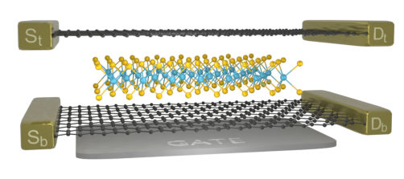
<figcaption class="paper-figure-caption"><b>Fig 1.</b> Figure 1. Schematics of the WSe2-intercalated bilayer graphene device. The WSe2 monolayer mediates interlayer overlap between the top and bottom graphene layers, form- ing a synthetic bilayer graphene at the Fermi level. The global horizontal mirror plane symmetry σh of the heterostructure forbids the presence of the apparent Rashba effects and leads to mutual compensation of local Rashba contributions from the top and bottom graphene/WSe2 interface. Source and drain electrodes on the top (St/Dt) and bottom (Sb/Db) graphene layers enable three different device configurations: (1) all active electrodes probe the fully symmetric device and confirm the absence of an apparent Rashba effect; (2)...</figcaption>
</figure>
<figure class="paper-figure-card">
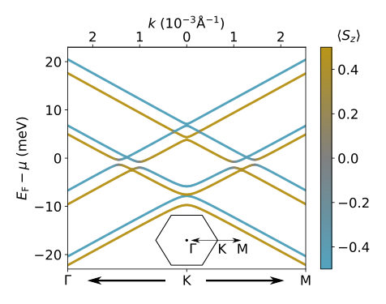
<figcaption class="paper-figure-caption"><b>Fig 2.</b> Figure 2. Calculated electronic structure of the zero twist angle graphene/WSe2/graphene heterostructure in the vicin- ity of the graphene K point. The calculation of the atomic wave projection suggests that the bands around the K point are constructed by approximately equal contributions of the top and bottom layers. Formed delocalized molecular-like or- bitals support the theory of the creation of a synthetic bilayer graphene, mediated by the WSe2 monolayer.</figcaption>
</figure>
<figure class="paper-figure-card">
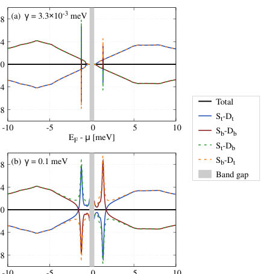
<figcaption class="paper-figure-caption"><b>Fig 3.</b> Figure 3. Calculated charge-spin conversion coefficients αREE as a function of doping for different experimental configura- tions sketched in FIG. 1: source/drain electrodes are config- ured on top (St/Dt) and bottom (Sb/Db) graphene layers. These are selectively activated as: situation 1 (all electrodes on: St, Sb, Dt, Db, labeled as Total); situation 2 (lateral: St-Dt and Sb-Db); and situation 3 (crossed: St-Db and Sb- Dt). Top (a) and bottom (b) panels correspond to different values of the quasiparticle lifetime, whose values are given on the graphs. The sharp peaks at EF −µ ≈−1.25 meV and EF −µ ≈+1.32 meV originate from band crossings away from the K point.</figcaption>
</figure>
</div>

<p><strong>Summary.</strong> This work theoretically explores charge-spin conversion in WSe2-intercalated bilayer graphene, creating a synthetic platform where interlayer coupling is crucial. The authors predict the observation of nonlocal Rashba-Edelstein effects and layer-selective spin signals by tuning external fields or twist angles. This suggests new device architectures for spintronics that leverage engineered quantum couplings.</p>
<p><strong>Why it may be interesting.</strong> While focused on condensed matter spintronics, the concept of emergent, tunable quantum couplings (interlayer hybridization) leading to non-trivial transport coefficients is relevant for understanding engineered quantum materials interfaces.</p>
<details>
<summary>Detailed structure</summary>
<p><strong>Main problem.</strong> The study investigates novel spintronic phenomena, specifically the nonlocal Rashba-Edelstein effect and layer-selective chirality switching, in a synthetic bilayer graphene system.</p>
<p><strong>Main result.</strong> The authors demonstrate that interlayer hybridization allows for distinct spin transport signatures, including nonlocal charge-to-spin conversion and opposite-sign local signals, which are robust to structural variations.</p>
<p><strong>Method.</strong> Theoretical calculations using the Kubo formula within the Smrčka-Streda formulation were employed to compute charge-spin conversion coefficients ($\alpha_{	ext{REE}}$ and $\alpha_{	ext{UREE}}$).</p>
<p><strong>Model / system.</strong> The system is a WSe2-intercalated bilayer graphene, which forms a synthetic bilayer structure where interlayer coupling competes with proximity-induced spin-orbit interaction. The analysis uses an effective Hamiltonian incorporating valley-dependent interlayer interactions.</p>
<p><strong>Key observables.</strong> Nonlocal Rashba-Edelstein effect coefficients ($\alpha_{S_t-D_b}^{	ext{REE}}$), layer-selective local signals, and the unconventional Rashba coefficient ($\alpha_{	ext{UREE}}$).</p>
<p><strong>Important parameters / regimes.</strong> Twist angle ($  heta$), perpendicular electric field ($E$), doping/chemical potential ($\mu$), and the relative strength of interlayer coupling versus SOC.</p>
<p><strong>Assumptions / limitations.</strong> The analysis assumes weak disorder scattering, and that the hybridization places the system beyond the perturbative regime of standard proximity heterostructures.</p>
<p><strong>Figures summary.</strong> Figures detail the dependence of $\alpha_{	ext{REE}}$ and $\alpha_{	ext{UREE}}$ on doping for various twist angles and electric fields, showing component contributions (e.g., St-Dt, Sb-Db) that confirm distinct physical mechanisms at play.</p>
<p><strong>Paper structure.</strong> The paper systematically analyzes the system's symmetries ($\sigma_h$) to predict zero global effects, then explores how breaking these symmetries via external fields ($E$) or twist angles ($ heta$) reveals hidden and nonlocal spin transport phenomena using detailed Kubo calculations.</p>
</details>
<details>
<summary>Abstract</summary>
<p>We show that intercalating a WSe$_2$ monolayer into bilayer graphene creates a synthetic bilayer graphene at the Fermi level, in which WSe$_2$-mediated wavefunction overlap hybridizes the two graphene layers, giving rise to states delocalized across both layers. Because the interlayer coupling is comparable in energy to the proximity-induced spin-orbit interaction, the resulting spintronic behavior goes beyond what is typically accessible in conventional single-interface proximity systems. A simple four-electrode device, with source and drain electrodes on both the top and bottom graphene layers, gives access to distinct regimes depending on which electrodes are activated. The most prominent feature is a nonlocal Rashba-Edelstein effect, activated via cross-layer source and drain electrodes, in which a charge current injected into one graphene layer generates a spin accumulation in the spatially separated opposite layer. This effect is robust to the twist angle modulation between graphene and WSe$_2$ and to the applied electric field, suggesting that a moderate degree of structural asymmetry along the vertical direction does not destroy it. In addition, activating the source and drain electrodes on either the top or bottom graphene layer reveals local Rashba-Edelstein signals of opposite sign in the two layers, thereby realizing a layer-selective chirality switch. This is a consequence of the hidden Rashba effect, which is present even when a net Rashba splitting is forbidden. Our results suggest new physical regimes and device architectures that could be useful for spintronic applications.</p>
</details>
<p><sub><a href="#top">↑ back to top</a></sub></p>

<p><a id="paper-2608.15293"></a></p>
<h3 id="field-gated-programming-of-nested-skyrmion-bags-by-spatially-selective-skyrmion-writing"><a href="http://arxiv.org/abs/2608.15293v1">Field-Gated Programming of Nested Skyrmion Bags by Spatially Selective Skyrmion Writing</a></h3>
<p><strong>Authors:</strong> Shuhuang Lin, Shirong Lin<br>
<strong>Type:</strong> theory · <strong>Category:</strong> other · <strong>PDF:</strong> <a href="https://arxiv.org/pdf/2608.15293v1">https://arxiv.org/pdf/2608.15293v1</a><br>
<strong>Analysis basis:</strong> full PDF text, analyzed in chunks
<strong>Topic relevance:</strong> <code>analog quantum simulation</code> <strong>2/5</strong> · <code>methods for driven-dissipative</code> <strong>2/5</strong> · <code>quantum measurements</code> <strong>2/5</strong> · <code>Keldysh / 2PI / non-Gaussian methods</code> <strong>1/5</strong> · <code>driven-dissipative phase transition</code> <strong>1/5</strong> · <code>non-equilibrium universality</code> <strong>1/5</strong></p>
<div class="figure-strip-hint">↔ Scroll figures horizontally</div>
<div class="paper-figures-scroll">
<figure class="paper-figure-card">
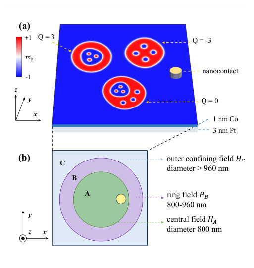
<figcaption class="paper-figure-caption"><b>Fig 1.</b> FIG. 1. Schematic illustration of nested skyrmion-bag struc- tures, the circular nanocontact, and the spatially segmented magnetic-field regions. (a) Representative magnetization con- figurations of nested skyrmion bags with different total topo- logical charges Q in a Co(1 nm)/Pt(3 nm) bilayer. The color map denotes the normalized out-of-plane magnetization com- ponent mz, where red and blue correspond to mz = +1 and mz = −1, respectively. The yellow cylinder represents a circular nanocontact with a diameter of dc = 30 nm, through which a perpendicular spin-polarized current is in- jected into the magnetic layer. The resulting Slonczewski spin-transfer torque is used for local skyrmion...</figcaption>
</figure>
<figure class="paper-figure-card">
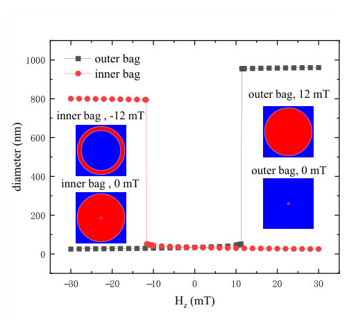
<figcaption class="paper-figure-caption"><b>Fig 2.</b> FIG. 2. Field-dependent size modulation of the nested skyrmion bag. The field in region C is fixed at HC = −20 mT. The black curve shows the outer bag diameter Dout as a func- tion of the common field HAB, where HA = HB = HAB. The red curve shows the inner bag diameter Din as a func- tion of HA, while the annular and outer fields are fixed at HB = +20 mT and HC = −20 mT, respectively.</figcaption>
</figure>
<figure class="paper-figure-card">
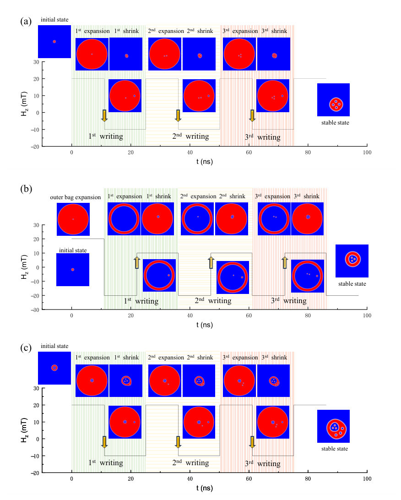
<figcaption class="paper-figure-caption"><b>Fig 3.</b> FIG. 3. Sequential writing of nested skyrmion bags using the field-gated nanocontact protocol. Colored background blocks indicate repeated writing cycles consisting of field-driven expansion, current-induced nucleation, and field-driven contraction. The upward- and downward-pointing arrows denote current pulses of I = +30 mA and I = −30 mA, respectively, each with a duration of 50 ps. Positive current is defined as flowing along +ˆz. (a) Writing of the S(m, S(0)) state. The curve represents the variation of the magnetic field HAB. The outer bag is expanded by setting HA = HB = HAB = +20 mT and contracted by setting HA = HB = HAB = −20 mT, while HC is fixed at −20 mT. (b) Writing of the S(0,...</figcaption>
</figure>
<figure class="paper-figure-card">

<figcaption class="paper-figure-caption"><b>Fig 4.</b> FIG. 4. Representative magnetization configurations of double-layer nested skyrmion bags S(m, S(n)) with different numbers of skyrmions in the outer and inner bag regions. Each panel shows a central 512 nm × 512 nm field of view cropped from the full 1024 nm × 1024 nm simulation do- main. The vertical and horizontal axes denote the numbers of skyrmions in the outer bag, m, and in the inner bag, n, respectively.</figcaption>
</figure>
<figure class="paper-figure-card">
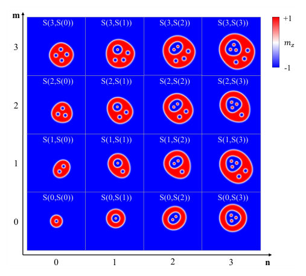
<figcaption class="paper-figure-caption"><b>Fig 5.</b> Figure 4 shows representative magnetization configu- rations of double-layer nested skyrmion bags S(m, S(n)) with different values of m and n. Here, m denotes the number of skyrmions confined in the outer bag, while n denotes the number of skyrmions confined in the inner bag. The vertical and horizontal directions in the config- uration map therefore correspond to increasing m and n, respectively. Because the outer and inner bag regions have oppo- site background magnetizations, skyrmions written into these two regions contribute opposite unit topological charges. Under the present convention, each skyrmion</figcaption>
</figure>
</div>

<p><strong>Summary.</strong> This work proposes a novel field-gated protocol to program complex nested skyrmion bags $S(m, S(n))$ in magnetic thin films. By sequentially expanding and writing into the outer and inner regions using tailored perpendicular magnetic fields and current pulses, the authors achieve deterministic control over the total topological charge. This demonstrates a viable pathway for realizing multilevel spintronic memory elements.</p>
<p><strong>Why it may be interesting.</strong> While focused on spintronics, the precise, controlled manipulation of topological defects using external stimuli (fields/currents) mirrors concepts in controlling quantum states or excitations in engineered quantum systems.</p>
<details>
<summary>Detailed structure</summary>
<p><strong>Main problem.</strong> The challenge lies in achieving deterministic and region-selective writing of individual skyrmions into complex, nested magnetic structures called skyrmion bags $S(m, S(n))$ for advanced information encoding.</p>
<p><strong>Main result.</strong> A field-gated nanocontact protocol was successfully simulated to demonstrate the controlled construction of arbitrary nested skyrmion bag states, confirming unit-step control over total topological charge.</p>
<p><strong>Method.</strong> The authors utilized micromagnetic simulations to model the dynamics, employing a three-stage cycle: selective magnetic field expansion (field gating), current-induced nucleation via spin-polarized pulses, and subsequent field-driven contraction.</p>
<p><strong>Model / system.</strong> The system is modeled using chiral ferromagnetic thin films (Co/Pt bilayer) containing nested skyrmion bags $S(m, S(n))$. The physics is governed by the micromagnetic energy functional and dynamics are described by the LLG equation with STT.</p>
<p><strong>Key observables.</strong> Total topological charge ($Q_{	ext{total}} = n - m$), which changes in unit steps during writing; the size modulation of outer ($D_{	ext{out}}$) and inner ($D_{	ext{in}}$) bag diameters as functions of applied fields.</p>
<p><strong>Important parameters / regimes.</strong> Material parameters include $M_s$, exchange stiffness ($A$), and DMI strength ($D$). Operational fields are set to $\pm 20 	ext{ mT}$ for stable expansion/contraction around a nanocontact.</p>
<p><strong>Assumptions / limitations.</strong> The protocol assumes precise control over spatially segmented perpendicular magnetic fields and the ability to apply highly localized, polarized current pulses.</p>
<p><strong>Figures summary.</strong> Figures illustrate the field-dependent size modulation of nested bags (Fig. 2) and demonstrate sequential writing protocols for constructing $S(m, S(n))$ states by showing the evolution of total topological charge over time (Figs. 3 &amp; 5).</p>
<p><strong>Paper structure.</strong> The paper establishes the physical model using micromagnetics, details the field-gating mechanism via spatially segmented fields to define nested regions, and then presents a cyclical protocol combining field control with current pulses to achieve deterministic, region-selective writing of skyrmions.</p>
</details>
<details>
<summary>Abstract</summary>
<p>Nested skyrmion bags are composite magnetic solitons whose internal occupation numbers provide an expanded state space for multilevel information encoding. However, deterministic and region-selective writing of individual skyrmions into nested bags remains challenging. Here, using micromagnetic simulations, we propose a field-gated nanocontact protocol for generating and programming double-layer nested skyrmion bags S(m,S(n)). The protocol exploits the opposite field responses of bag regions with antiparallel magnetic backgrounds. Spatially segmented perpendicular magnetic fields selectively expand either the outer region or the inner bag until it overlaps with a nanocontact. A spin-polarized current pulse of the appropriate polarity then nucleates one skyrmion in the selected region, while subsequent field-driven contraction moves the written skyrmion away from the contact and restores the writing site for repeated operation. Starting from an empty nested bag S(0,S(0)), this procedure enables the controlled construction of S(m,S(0)), S(0,S(n)), and general S(m,S(n)) states. The simulated total topological charge changes in unit steps during sequential writing, confirming one-at-a-time and region-selective control. These results provide a possible route toward programmable nested topological states for multilevel spintronic information encoding.</p>
</details>
<p><sub><a href="#top">↑ back to top</a></sub></p>

<p><a id="paper-2608.16065"></a></p>
<h3 id="helical-magnon-frequency-comb-in-synthetic-antiferromagnetic-skyrmion-lattices"><a href="http://arxiv.org/abs/2608.16065v1">Helical Magnon Frequency Comb in Synthetic Antiferromagnetic Skyrmion Lattices</a></h3>
<p><strong>Authors:</strong> Liu Xuejuan, Zheng Xingen, Li Zhixiong, Li Xiaoguang, Zhou Cangtao, Li Hui, Sun Haipeng, Yan Peng<br>
<strong>Type:</strong> theory · <strong>Category:</strong> other · <strong>PDF:</strong> <a href="https://arxiv.org/pdf/2608.16065v1">https://arxiv.org/pdf/2608.16065v1</a><br>
<strong>Analysis basis:</strong> full PDF text, analyzed in chunks
<strong>Topic relevance:</strong> <code>driven-dissipative phase transition</code> <strong>2/5</strong> · <code>methods for driven-dissipative</code> <strong>2/5</strong> · <code>Keldysh / 2PI / non-Gaussian methods</code> <strong>1/5</strong> · <code>analog quantum simulation</code> <strong>1/5</strong> · <code>correlated / nonlocal dissipation</code> <strong>1/5</strong> · <code>interference shaping light</code> <strong>1/5</strong> · <code>non-equilibrium universality</code> <strong>1/5</strong></p>
<div class="figure-strip-hint">↔ Scroll figures horizontally</div>
<div class="paper-figures-scroll">
<figure class="paper-figure-card">
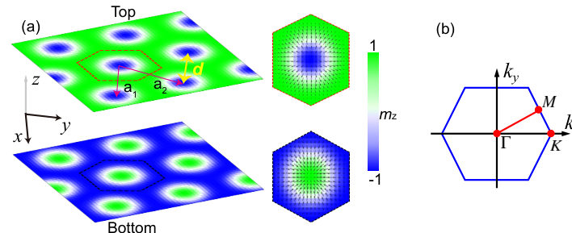
<figcaption class="paper-figure-caption"><b>Fig 1.</b> Fig. 1. Schematic of the Bilayer SAF-SkL texture. a The real-space SAF-SkL structure with lattice constant d = 40 nm. The right panels show enlarged views of the magnetic unit cell in the two layers, as indicated by the dashed hexagons in the left panel. The arrows indicate the spin vectors. b First Brillouin zone of a single SkL, with high-symmetry points Γ, M, and K labeled.</figcaption>
</figure>
<figure class="paper-figure-card">
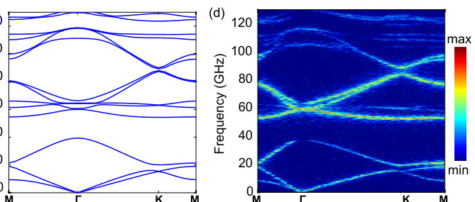
<figcaption class="paper-figure-caption"><b>Fig 2.</b> Fig. 2. Bulk magnon band structure of the SAF-SkL. a, b Schematics of the top and bottom SkLs, with a localized excitation magnetic field applied to a central quadrilateral region (black shaded area). c Theoretical bulk magnon band structure of the SAF-SkL along the M −Γ −K −M path. Only the lowest fourteen bands are shown. d Micromagnetically simulated band structure of the same system along the identical path.</figcaption>
</figure>
<figure class="paper-figure-card">
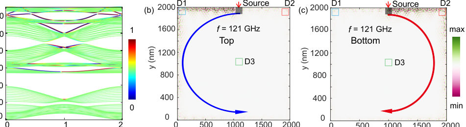
<figcaption class="paper-figure-caption"><b>Fig 3.</b> Fig. 3. Helical edge states with opposite chirality in the bilayer SAF-SkL. a Strip magnon spectrum colored by the normalized transverse position &lt; y &gt; /Ly = P</figcaption>
</figure>
<figure class="paper-figure-card">
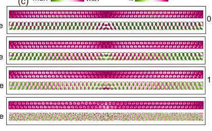
<figcaption class="paper-figure-caption"><b>Fig 4.</b> Fig. 4. HMFC generation in the SAF-SkL. Spin wave spectra measured at positions D1, D2, and D3 in the top a and bottom b SkLs, respectively. c The spatial profiles of the spectral amplitudes (upper) and phases (lower) for several representative modes.</figcaption>
</figure>
<figure class="paper-figure-card">
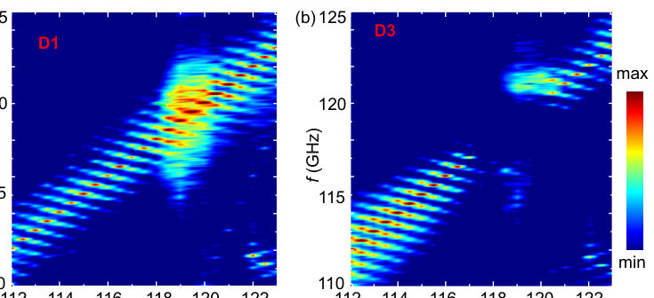
<figcaption class="paper-figure-caption"><b>Fig 5.</b> Fig. 5. Dependence of the HMFC on the driving frequency. a Measured spin wave spectra in region D1. b Measured spectra in region D3. c Extracted amplitudes of the primary peak fl and the sidebands fl ± fg as a function of the driving frequency in D1. d Corresponding amplitudes for D3. The driving amplitude is maintained at 50 mT.</figcaption>
</figure>
</div>

<p><strong>Summary.</strong> The paper investigates generating helical magnon frequency combs in Synthetic Antiferromagnetic Skyrmion Lattices (SAF-SkLs). By combining theory and simulation, the authors show that these lattices host unique, edge-localized magnonic modes. These modes enable robust nonlinear signal generation whose properties can be actively tuned by controlling the interlayer antiferromagnetic coupling.</p>
<p><strong>Why it may be interesting.</strong> This work is highly relevant as it explores coherent signal processing using magnonics—a field that bridges condensed matter physics with potential applications in quantum information or advanced sensing, often involving non-linear wave dynamics.</p>
<details>
<summary>Detailed structure</summary>
<p><strong>Main problem.</strong> The study investigates generating helical magnon frequency combs (HMFCs) within Synthetic Antiferromagnetic Skyrmion Lattices (SAF-SkLs). The goal is to establish SAF-SkLs as a tunable platform for robust, edge-localized nonlinear magnonics.</p>
<p><strong>Main result.</strong> The research demonstrates that HMFC generation relies critically on the three-magnon interaction between helical magnon edge states and the skyrmion gyration mode. Furthermore, interlayer antiferromagnetic coupling provides a mechanism to tune the comb spacing and energy distribution.</p>
<p><strong>Method.</strong> The work combines analytical modeling using the Holstein-Primakoff formalism with micromagnetic simulations (MuMax3) to analyze magnon band structures and time evolution under external driving fields.</p>
<p><strong>Model / system.</strong> The physical system is a SAF-SkL, composed of two ferromagnetic Skyrmion Lattices coupled antiferromagnetically. The dynamics are governed by a spin Hamiltonian incorporating exchange, interlayer coupling ($J_{af}$), and Dzyaloshinskii-Moriya interaction terms.</p>
<p><strong>Key observables.</strong> Helical Magnon Frequency Comb (HMFC) spectra, magnon band structure along high-symmetry paths, and the spatial localization of edge states.</p>
<p><strong>Important parameters / regimes.</strong> Interlayer antiferromagnetic coupling strength ($J_{af}$), driving frequency relative to the helical edge-state band, and material parameters like $M_s$ and $A_{ex}$.</p>
<p><strong>Assumptions / limitations.</strong> The analysis assumes that the nonlinear magnon interaction is dominated by three-magnon processes involving the helical edge states. The use of specific boundary conditions (periodic vs. open) is crucial for distinguishing bulk from edge modes.</p>
<p><strong>Figures summary.</strong> Figures illustrate the SAF-SkL texture, the bulk magnon band structure showing interlayer coupling effects, and time evolution simulations confirming counterpropagating helical edge states and localized HMFC generation spectra.</p>
<p><strong>Paper structure.</strong> The paper progresses by first defining the physical platform (SAF-SkLs) and its Hamiltonian. It then uses analytical/numerical methods to characterize the low-energy magnon band structure, highlighting the emergence of chiral edge modes. Finally, it models the nonlinear excitation process to demonstrate robust HMFC generation localized at the edges.</p>
</details>
<details>
<summary>Abstract</summary>
<p>Synthetic antiferromagnetic skyrmion lattices (SAF-SkLs), consisting of two ferromagnetic SkLs coupled antiferromagnetically with compensated magnetization, provide a promising platform for robust nonlinear magnonics. Here, we investigate helical magnon frequency comb (HMFC) generation in a SAF-SkL by combining analytical modeling with micromagnetic simulations. We show that nonlinear coupling between helical magnon edge states and the skyrmion gyration produces frequency combs with pronounced edge localization. The HMFC exhibits strong enhancement exclusively when the driving frequency lies within the helical edge-state band, whereas the interior response remains negligible. This frequency selectivity confirms the essential role of helical edge modes in localized nonlinear frequency conversion. We further demonstrate that the interlayer antiferromagnetic coupling reconstructs the magnon spectrum, thereby tuning the comb spacing and the number of comb teeth while also redistributing modal energy. Our results establish SAF-SkLs as a tunable platform for edge-localized HMFCs and suggest a route toward robust coherent magnonic signal processing.</p>
</details>
<p><sub><a href="#top">↑ back to top</a></sub></p>

<p><a id="paper-2608.14842"></a></p>
<h3 id="rapid-supercurrent-decay-in-mnmath1644mathsimath1645math-josephson-junctions"><a href="http://arxiv.org/abs/2608.14842v1">Rapid supercurrent decay in Mn$_5$Si$_3$ Josephson junctions</a></h3>
<p><strong>Authors:</strong> Arjun Sapkota, Kurt Lorenzen, Tyler Kuhn, Juan Gomez, Demet Korucu, Robert M. Klaes, Reza Loloee, Norman O. Birge, Nathan Satchell<br>
<strong>Type:</strong> experiment · <strong>Category:</strong> other · <strong>PDF:</strong> <a href="https://arxiv.org/pdf/2608.14842v1">https://arxiv.org/pdf/2608.14842v1</a><br>
<strong>Analysis basis:</strong> full PDF text, analyzed in chunks
<strong>Topic relevance:</strong> <code>QC/QI experiment</code> <strong>2/5</strong> · <code>driven-dissipative phase transition</code> <strong>2/5</strong> · <code>Keldysh / 2PI / non-Gaussian methods</code> <strong>1/5</strong> · <code>analog quantum simulation</code> <strong>1/5</strong> · <code>correlated / nonlocal dissipation</code> <strong>1/5</strong> · <code>methods for driven-dissipative</code> <strong>1/5</strong> · <code>quantum measurements</code> <strong>1/5</strong></p>
<div class="figure-strip-hint">↔ Scroll figures horizontally</div>
<div class="paper-figures-scroll">
<figure class="paper-figure-card">
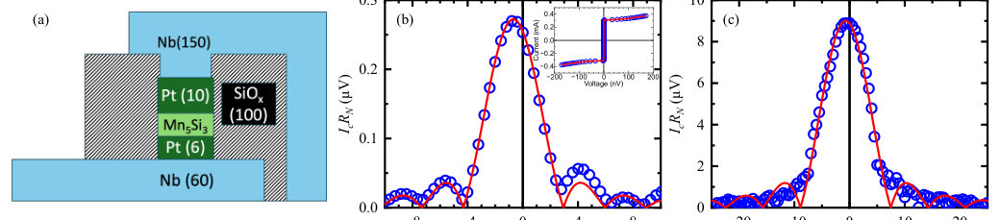
<figcaption class="paper-figure-caption"><b>Fig 1.</b> FIG. 1. (a) Schematic cross section of the Josephson junction device, with layer thicknesses given in (nm) as grown. The thickness of the Mn5Si3 layer ranges from 0.5 to 4.5 nm. (b,c) Product of the critical current and normal state resistance, IcRN, versus applied magnetic field for Josephson junctions with Mn5Si3 thicknesses of (b) 2.0 nm and (c) 1.0 nm at 4.2 K. The solid red lines are fits to the data of Eqs. 2 and 3. Inset of (b): the I–V characteristic of the same junction at zero applied field, together with the fit to Eq. 1 from which Ic and RN are determined.</figcaption>
</figure>
<figure class="paper-figure-card">
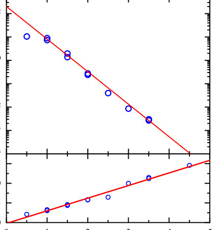
<figcaption class="paper-figure-caption"><b>Fig 2.</b> FIG. 2. Thickness dependence of supercurrent in Mn5Si3 Josephson junctions. Top: Product of the critical current and normal state resistance, IcRN versus Mn5Si3 thickness at 4.2 K. The line is a best fit to Eq. 4 over the range 1–3.5 nm with decay length ξMn5Si3 = 0.31 ± 0.03 nm. Bottom: Area resistance product, ARN, for the junctions, where the best fit to Eq. 5 indicates the Mn5Si3 resistivity, ρ = 320±10 µΩcm. Each data point represents one Josephson junction and the uncertainty in determining IcRN and ARN is smaller than the data points.</figcaption>
</figure>
<figure class="paper-figure-card">
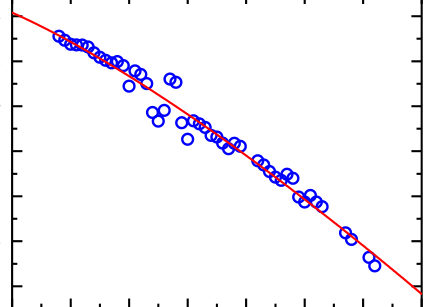
<figcaption class="paper-figure-caption"><b>Fig 3.</b> FIG. 3. Product of the critical current and normal state resis- tance, IcRN versus temperature for a Josephson junction with Mn5Si3 thickness of 1.0 nm. The critical temperature is ap- proximately 8.8 K, and the trend of IcRN(T) is well described by the phenomenological expression, Eq. 6. Each data point represents IcRN extracted at one temperature and the uncer- tainty in determining IcRN is smaller than the data points.</figcaption>
</figure>
</div>

<p><strong>Summary.</strong> Researchers fabricated Josephson junctions using $ ext{Mn}_5   ext{Si}_3$ as a barrier to test predictions of $0-\pi$ transitions characteristic of metallic antiferromagnets. While the supercurrent decay was measured successfully, no oscillatory transitions were observed. The authors conclude that achieving clear signatures requires barriers with highly defined crystalline orientation.</p>
<p><strong>Why it may be interesting.</strong> This work directly probes the interplay between magnetism (altermagnetism) and superconductivity in nanoscale devices, which is highly relevant to superconducting quantum circuits and spintronics.</p>
<details>
<summary>Detailed structure</summary>
<p><strong>Main problem.</strong> The study investigates supercurrent decay and the presence of predicted 0-$\pi$ transitions in Josephson junctions utilizing metallic altermagnetic barriers ($    ext{Mn}_5   ext{Si}_3$).</p>
<p><strong>Main result.</strong> The critical current decays exponentially with a short length scale ($\xi = 0.31 \pm 0.03$ nm), and no oscillatory $0-\pi$ transitions were resolved, suggesting structural or magnetic disorder suppresses the predicted effects.</p>
<p><strong>Method.</strong> Electrical transport measurements (I-V characteristics) were performed on patterned $   ext{Nb}/    ext{Pt}/    ext{Mn}_5   ext{Si}_3/  ext{Pt}/    ext{Nb}$ junctions while varying barrier thickness and temperature.</p>
<p><strong>Model / system.</strong> The physical system is a Josephson junction where the superconducting barrier material is epitaxial $   ext{Mn}_5   ext{Si}_3$, an altermagnetic compound. Theoretical predictions suggested oscillatory behavior ($0-\pi$ transitions) dependent on crystal orientation.</p>
<p><strong>Key observables.</strong> Critical current ($I_c$), supercurrent decay length ($\xi_{	ext{Mn}_5	ext{Si}_3}$), and the temperature dependence of $I_c$.</p>
<p><strong>Important parameters / regimes.</strong> Supercurrent decay length $\xi_{	ext{Mn}_5	ext{Si}_3} = 0.31 \pm 0.03$ nm; Barrier resistivity $
ho_{    ext{Mn}_5   ext{Si}_3} = 320 \pm 10 \, \mu\Omega    ext{cm}$.</p>
<p><strong>Assumptions / limitations.</strong> The absence of transitions is attributed to the microstructure, uncertain magnetic phase, and narrow thickness window, rather than a failure of the underlying theory.</p>
<p><strong>Figures summary.</strong> Figures show $I_c R_N$ decay vs. thickness (single exponential fit) and $I_c R_N$ vs. Temperature (smooth/monotonic dependence). Structural characterization used XRR and XRD data.</p>
<p><strong>Paper structure.</strong> The paper first establishes the theoretical motivation for studying altermagnetic Josephson junctions, then details the fabrication and measurement of $   ext{Nb}/    ext{Pt}/    ext{Mn}_5   ext{Si}_3/  ext{Pt}/    ext{Nb}$ junctions. Results show exponential decay but lack oscillations, leading to a discussion on structural requirements for future tests.</p>
</details>
<details>
<summary>Abstract</summary>
<p>Theoretical work predicts that Josephson junctions containing metallic altermagnetic barriers should display $0$-$π$ transitions of the critical current as a function of both barrier thickness and temperature, with the decay and oscillation period of the supercurrent depending on the orientation of the crystal axes relative to the transport direction. Motivated by these predictions, and by reports of a compensated magnetic phase attributed to altermagnetism in epitaxial Mn$_5$Si$_3$ thin films, we fabricate and measure Nb/Pt/Mn$_5$Si$_3$/Pt/Nb Josephson junctions varying the thickness of the Mn$_5$Si$_3$ barrier. The critical current decays as a single exponential over more than four orders of magnitude with decay length $ξ_{\text{Mn}_5\text{Si}_3} = 0.31 \pm 0.03$ nm, shorter than reported for Josephson junctions containing the metallic antiferromagnets FeMn, Cr, and NiMn. The Mn$_5$Si$_3$ barrier has an estimated current-perpendicular-to-plane resistivity of $320 \pm 10 μΩ\,$cm. No $0$-$π$ transition is resolved at the sampled barrier thicknesses, and the temperature dependence of the critical current of a junction with a 1 nm barrier is smooth and monotonic. We discuss the absence of resolvable transitions in terms of the microstructure of the barrier, its uncertain magnetic phase, and the narrow thickness window imposed by the rapid decay, and identify barriers with well-defined crystalline orientation as the key requirement for future tests of altermagnetic Josephson physics.</p>
</details>
<p><sub><a href="#top">↑ back to top</a></sub></p>

<p><a id="paper-2608.15232"></a></p>
<h3 id="temperature-dependent-spin-orbit-torque-generation-in-perpendicularly-magnetized-topological-insulator-magnetic-multilayer-heterostructures"><a href="http://arxiv.org/abs/2608.15232v1">Temperature-Dependent Spin-Orbit Torque Generation in Perpendicularly Magnetized Topological Insulator-Magnetic Multilayer Heterostructures</a></h3>
<p><strong>Authors:</strong> Soumyarup Hait, Benjamin A. Brereton, Ahmet Yagmur, Satoshi Sasaki, Gavin Burnell, Christopher H. Marrows<br>
<strong>Type:</strong> experiment · <strong>Category:</strong> other · <strong>PDF:</strong> <a href="https://arxiv.org/pdf/2608.15232v1">https://arxiv.org/pdf/2608.15232v1</a><br>
<strong>Analysis basis:</strong> full PDF text, analyzed in chunks
<strong>Topic relevance:</strong> <code>Keldysh / 2PI / non-Gaussian methods</code> <strong>2/5</strong> · <code>driven-dissipative phase transition</code> <strong>2/5</strong> · <code>analog quantum simulation</code> <strong>1/5</strong> · <code>correlated / nonlocal dissipation</code> <strong>1/5</strong> · <code>methods for driven-dissipative</code> <strong>1/5</strong> · <code>non-equilibrium universality</code> <strong>1/5</strong> · <code>quantum measurements</code> <strong>1/5</strong></p>
<div class="figure-strip-hint">↔ Scroll figures horizontally</div>
<div class="paper-figures-scroll">
<figure class="paper-figure-card">
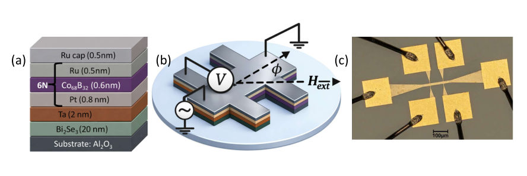
<figcaption class="paper-figure-caption"><b>Fig 1.</b> Figure 1: Experimental schematics. (a) Schematic illustration of an example TI/MMl het- erostructure stack: Al2O3/Bi2Se3(20 nm)/Ta(2 nm)/MML. (b) Schematic representation of the Hall measurement geometry. The detailed measurement procedure is provided in the Supplementary Information. (c) Optical micrograph of the Hall bar corresponding to the sample Al2O3/Bi2Se3(20 nm)/Ta(2 nm)/MML.</figcaption>
</figure>
<figure class="paper-figure-card">
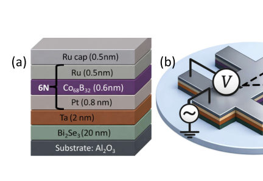
<figcaption class="paper-figure-caption"><b>Fig 2.</b> Fig. 1(b,c).</figcaption>
</figure>
<figure class="paper-figure-card">
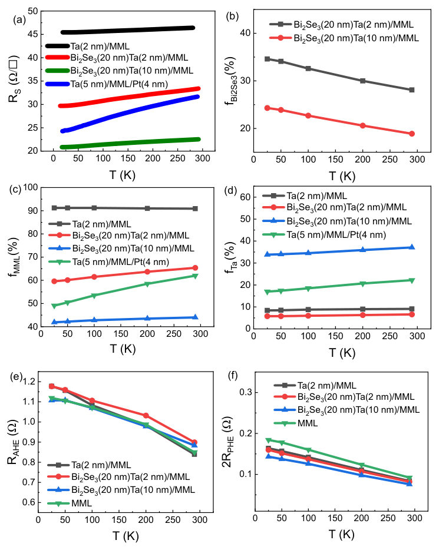
<figcaption class="paper-figure-caption"><b>Fig 3.</b> Figure 2: Temperature dependent transport properties. (a) Temperature-dependent sheet resistance of the samples SiO2/Ta(2 nm)/MML, Al2O3/Bi2Se3(20 nm)/Ta(2 nm)/MML, and Al2O3/Bi2Se3(20 nm)/Ta(10 nm)/MML. (b–d) Fraction of the total current flowing through the Bi2Se3 (fBi2Se3),MML (fMML), and Ta buffer (fTa), respectively, as obtained from the parallel-resistor model, described in detail in the Supplementary Information. (d–f) Tem- perature dependence of the anomalous Hall resistance, and planar Hall resistance for the heterostructures.</figcaption>
</figure>
<figure class="paper-figure-card">
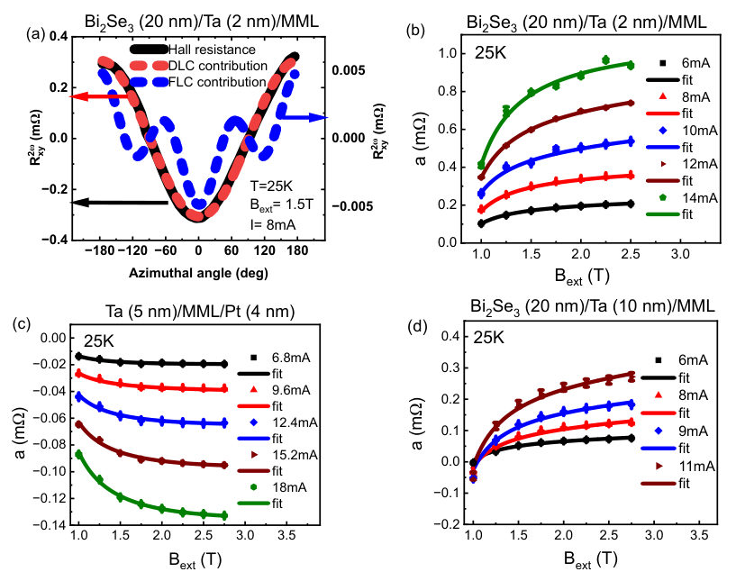
<figcaption class="paper-figure-caption"><b>Fig 4.</b> Figure 3: Second harmonic Hall measurements. (a) Representative azimuthal-angle- dependent second-harmonic Hall signals for the Al2O3/Bi2Se3(20 nm)/Ta(2 nm)/MML mea- sured at 25 K, 1.5 T, and an applied current of ∼9 mA. Black points denote the experimental data, while the red and blue dashed lines represent contributions to a fit to Eq. 1, from which the damping-like and field-like contributions (DLC and FLC) are extracted. Note the change of scale for the FLC contribution. (b–d) Magnetic-field dependence of DLC for the three samples, fitted using Eq. 2 to obtain the damping-like torque BDL and thermal contributions at different applied currents.</figcaption>
</figure>
<figure class="paper-figure-card">
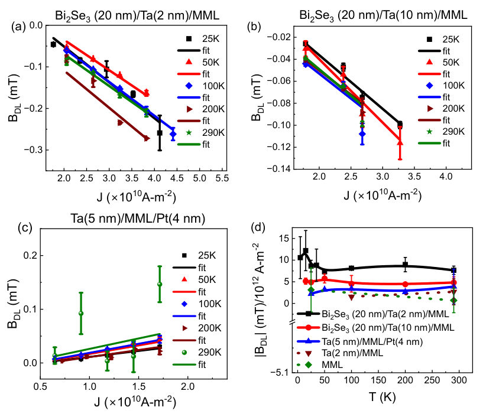
<figcaption class="paper-figure-caption"><b>Fig 5.</b> Figure 4: Damping-like contributions to the SOT. (a–c) Linear variation of the damping-like effective field BDL with applied current density for the Al2O3/Bi2Se3(20 nm)/Ta(2 nm)/MML, Al2O3/Bi2Se3(20 nm)/Ta(10 nm)/MML, and SiO2/Ta(5 nm)/MML/Pt(4 nm) samples, respectively, measured at different temperatures. The points represent the BDL values extracted from the DLC-versus-field fits, while the solid lines are linear fits used to determine the damping-like torque per unit current density. (d) Temperature dependence of the extracted BDL per unit current density for all samples. Over the full temperature range, the damping-like torque per unit current density exhibits a clear hierarchy, with...</figcaption>
</figure>
</div>

<p><strong>Summary.</strong> This work reports a detailed temperature-dependent investigation into Spin-Orbit Torque (SOT) generation in $  ext{TI}/    ext{MML}$ heterostructures. By using second-harmonic Hall measurements, the authors demonstrate that spin currents originating from topological surface states significantly enhance SOT efficiency compared to conventional materials. The results underscore the critical role of interfacial engineering and low temperatures in maximizing spintronic device performance.</p>
<p><strong>Why it may be interesting.</strong> While focused on condensed matter spintronics rather than fundamental quantum dynamics, the study involves interfacial physics and spin transport phenomena which touch upon non-equilibrium many-body effects relevant to open quantum systems modeling.</p>
<details>
<summary>Detailed structure</summary>
<p><strong>Main problem.</strong> The study investigates the temperature-dependent generation of spin-orbit torque (SOT) in advanced spintronic heterostructures to enable electrical manipulation of magnetization.</p>
<p><strong>Main result.</strong> Topological insulator ($   ext{Bi}_2   ext{Se}_3$)-derived currents dominate SOT generation, leading to significantly larger torques compared to conventional heavy metal sources, especially at low temperatures.</p>
<p><strong>Method.</strong> The research employs comprehensive temperature-dependent measurements using second-harmonic Hall voltage techniques and current shunting analysis to quantify spin-current contributions from different layers.</p>
<p><strong>Model / system.</strong> The physical system is a multilayer heterostructure stack consisting of a perpendicularly magnetized metallic multilayer (MML) grown on top of a topological insulator ($   ext{Bi}_2   ext{Se}_3$) epilayer, separated by various buffer layers like Ta.</p>
<p><strong>Key observables.</strong> SOT magnitude ($   au_{    ext{DL}}$), temperature dependence of torque, current shunting fractions ($f_{ ext{Bi}2    ext{Se}3}$, $f_{	ext{Ta}}$, $f_{	ext{MML}}$), Anomalous/Planar Hall Resistances.</p>
<p><strong>Important parameters / regimes.</strong> Low temperatures (e.g., 15 K) show enhanced torque; thin Ta buffers (2 nm) maximize efficiency; the comparison between TI-containing and non-TI systems is key.</p>
<p><strong>Assumptions / limitations.</strong> The analysis relies on decomposing the second-harmonic signal using azimuthal angle sweeps to separate contributions related to $    ext{B}<em ext_FL="ext{FL">{    ext{DL}}$ and $ ext{B}</em>$.}</p>
<p><strong>Figures summary.</strong> Figures illustrate schematics of the heterostructure stack, temperature dependence of resistance/shunting fractions, and evolution of Hall resistances ($  ext{R}<em ext_PHE="ext{PHE">{    ext{AHE}}$, $   ext{R}</em>$) with applied current.}</p>
<p><strong>Paper structure.</strong> The paper progresses from establishing the physical system and measurement techniques (second-harmonic Hall measurements) to presenting quantitative results showing the enhancement provided by TIs, analyzing the role of buffer thickness, and concluding that TI-derived currents are dominant.</p>
</details>
<details>
<summary>Abstract</summary>
<p>We report a comprehensive temperature-dependent investigation of spin-orbit torque (SOT) generation in heterostructures comprising a perpendicularly magnetized metallic multilayer grown on top of a topological insulator (TI) epilayer. Temperature-dependent second-harmonic Hall measurements reveal distinct trends in the magnitude of the spin-orbit torque across the studied heterostructures. Samples incorporating Bi2Se3 exhibit torques reaching approximately 12 mT/(10^12 A m^-2) at 15 K, around 5 times larger than those in a multilayer without the topological layer. The structure with a thin 2-nm Ta buffer for the multilayer shows the strongest enhancement and a pronounced increase at low temperatures, highlighting efficient spin-current generation from the topological surface states. In contrast, the sample with a 10 nm-thick Ta spacer exhibits reduced torque efficiency, consistent with partial attenuation of spin transmission through the buffer. Systems lacking Bi2Se3 but containing two heavy metals (Ta and Pt) yield significantly smaller torques, around 2.5 mT/(10^12 A m^-2), despite the presence of conventional spin Hall sources. These observations underscore the dominant role of TI-derived spin-momentum-locked currents in driving large damping-like torques and their sensitivity to interfacial structure and buffer-layer thickness.</p>
</details>
<p><sub><a href="#top">↑ back to top</a></sub></p>

<p><a id="paper-2608.16057"></a></p>
<h3 id="chiral-damping-induced-chirality-switching-and-control-of-domain-walls-in-antiferromagnets"><a href="http://arxiv.org/abs/2608.16057v1">Chiral Damping-Induced Chirality Switching and Control of Domain Walls in Antiferromagnets</a></h3>
<p><strong>Authors:</strong> Collins Ashu Akosa, Mu-Kun Lee, Aurélien Manchon, Masahito Mochizuki<br>
<strong>Type:</strong> theory · <strong>Category:</strong> other · <strong>PDF:</strong> <a href="https://arxiv.org/pdf/2608.16057v1">https://arxiv.org/pdf/2608.16057v1</a><br>
<strong>Analysis basis:</strong> full PDF text, analyzed in chunks
<strong>Topic relevance:</strong> <code>driven-dissipative phase transition</code> <strong>2/5</strong> · <code>non-equilibrium universality</code> <strong>2/5</strong> · <code>Frenkel-Kontorova</code> <strong>1/5</strong> · <code>Keldysh / 2PI / non-Gaussian methods</code> <strong>1/5</strong> · <code>correlated / nonlocal dissipation</code> <strong>1/5</strong> · <code>methods for driven-dissipative</code> <strong>1/5</strong></p>
<div class="figure-strip-hint">↔ Scroll figures horizontally</div>
<div class="paper-figures-scroll">
<figure class="paper-figure-card">
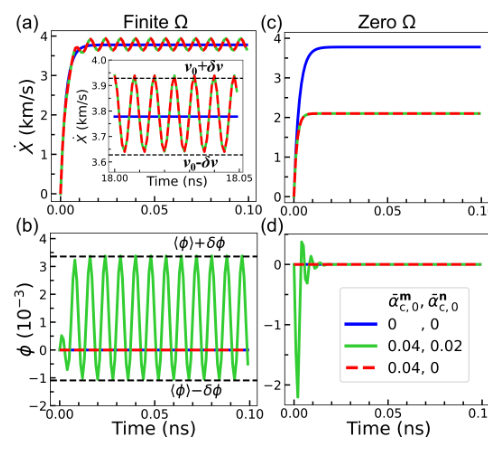
<figcaption class="paper-figure-caption"><b>Fig 1.</b> FIG. 1: Numerical results of DW velocity and tilt angle under both SOT and STT for CDs with (a)–(b) a finite frequency Ω, and (c)–(d) zero frequency. The inset of (a) shows an enlarged view. The horizontal black dotted lines in the inset of (a) denote v0 ± δv, while those in (b) denote ⟨ϕ⟩± δϕ.</figcaption>
</figure>
<figure class="paper-figure-card">
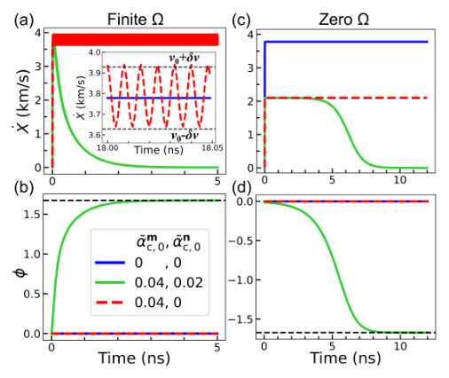
<figcaption class="paper-figure-caption"><b>Fig 2.</b> FIG. 2: Numerical results of DW velocity and tilt angle with- out DMI, HD = 0. The inset in (a) shows an enlarged view.</figcaption>
</figure>
</div>

<p><strong>Summary.</strong> This paper theoretically investigates the role of chiral damping in controlling domain wall dynamics within antiferromagnets. By analyzing coupled equations of motion, the authors show that CD introduces coupling between translational and rotational modes, leading to measurable oscillations in DW velocity and tilt angle. The findings establish CD as a key control parameter for manipulating magnetic textures, even enabling chirality switching without DMI.</p>
<p><strong>Why it may be interesting.</strong> This work provides a detailed theoretical framework connecting microscopic dissipation mechanisms (CD) to macroscopic control parameters of magnetic textures in AFMs, which is highly relevant for understanding spintronics and emergent quantum phenomena in condensed matter.</p>
<details>
<summary>Detailed structure</summary>
<p><strong>Main problem.</strong> The study investigates how chiral damping (CD) affects current-driven domain wall (DW) dynamics in antiferromagnets (AFMs), aiming to establish measurable experimental signatures for CD.</p>
<p><strong>Main result.</strong> Asymmetric CD can induce rich dynamical phenomena, including oscillations in DW velocity and tilt angle, and enables chirality switching between Néel- and Bloch-type DWs even without the Dzyaloshinskii-Moriya interaction (DMI).</p>
<p><strong>Method.</strong> The authors employ a perturbative analysis on the coupled equations of motion for the DW center position ($X$) and tilt angle ($\phi$), derived from the Landau-Lifshitz-Gilbert-Slonczewski equation.</p>
<p><strong>Model / system.</strong> The system modeled is a one-dimensional uniaxial AFM domain wall composed of two magnetic sublattices, driven by spin currents (STT/SOT) and subject to chiral damping effects arising from Rashba and Dresselhaus spin-orbit interactions.</p>
<p><strong>Key observables.</strong> DW velocity ($v(t)$), tilt angle ($\phi(t)$), oscillation amplitudes ($\delta v$, $\delta\phi$), and the effective mass tensor renormalization.</p>
<p><strong>Important parameters / regimes.</strong> Chiral damping constants ($ar{\alpha}_{m,n}^c$), Rashba/Dresselhaus SOI strengths ($\Lambda_R, \Lambda_D$), driving currents (STT/SOT), and external fields ($H_{D0}, \Omega$).</p>
<p><strong>Assumptions / limitations.</strong> The analysis relies on perturbative expansions in the CD parameters and assumes that spin pumping effects are negligible; it also neglects distortions due to dynamic DW width.</p>
<p><strong>Figures summary.</strong> Figures illustrate numerical results showing oscillatory behavior of velocity and tilt angle when oscillating CDs are applied, and demonstrate the transition towards Bloch-like DWs when DMI is absent but asymmetric CD is present.</p>
<p><strong>Paper structure.</strong> The paper establishes the governing equations for AFM DW dynamics incorporating CD. It then analyzes how CD couples translational and rotational modes, deriving explicit expressions for oscillatory amplitudes under time-varying driving forces (e.g., oscillating DMI).</p>
</details>
<details>
<summary>Abstract</summary>
<p>We investigate the impact of chiral damping (CD) on current-driven domain-wall (DW) dynamics in antiferromagnets (AFMs). Asymmetric CD between sublattices generates off-diagonal components in the DW mass tensor, thereby coupling translational and rotational modes. When CD is modulated by an ac gate voltage via the Rashba spin-orbit interaction (RSOI), symmetric and asymmetric contributions induce oscillations in the DW velocity and tilt angle, respectively. A perturbative analysis yields explicit expressions for the oscillation amplitudes, in quantitative agreement with numerical simulations. Remarkably, even in the absence of Dzyaloshinskii-Moriya interaction (DMI), asymmetric CD enables chirality switching between Néel- and Bloch-type DWs. Finally, by exploiting the relativistic Lorentz contraction of the DW width at high driving currents, we propose an experimentally viable protocol to qualitatively and quantitatively extract the CD contribution. These results establish clear experimental signatures of CD in antiferromagnetic DW dynamics and demonstrate its potential as a control parameter for magnetic textures.</p>
</details>
<p><sub><a href="#top">↑ back to top</a></sub></p>

<p><a id="paper-2608.16808"></a></p>
<h3 id="surface-weak-ferromagnetism"><a href="http://arxiv.org/abs/2608.16808v1">Surface weak ferromagnetism</a></h3>
<p><strong>Authors:</strong> Vladimir A. Zyuzin<br>
<strong>Type:</strong> theory · <strong>Category:</strong> other · <strong>PDF:</strong> <a href="https://arxiv.org/pdf/2608.16808v1">https://arxiv.org/pdf/2608.16808v1</a><br>
<strong>Analysis basis:</strong> full PDF text, analyzed in chunks
<strong>Topic relevance:</strong> <code>Keldysh / 2PI / non-Gaussian methods</code> <strong>2/5</strong> · <code>analog quantum simulation</code> <strong>2/5</strong> · <code>quantum measurements</code> <strong>2/5</strong> · <code>driven-dissipative phase transition</code> <strong>1/5</strong> · <code>methods for driven-dissipative</code> <strong>1/5</strong></p>
<div class="figure-strip-hint">↔ Scroll figures horizontally</div>
<div class="paper-figures-scroll">
<figure class="paper-figure-card">
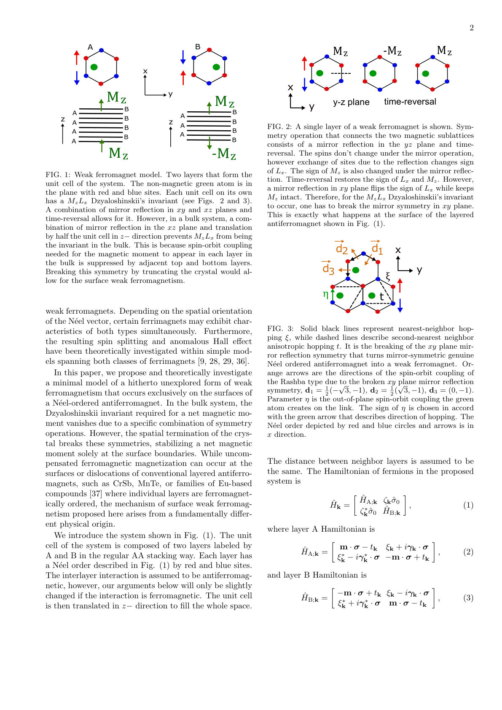
<figcaption class="paper-figure-caption"><b>Fig 1.</b> Low-resolution page preview, page 2</figcaption>
</figure>
<figure class="paper-figure-card">
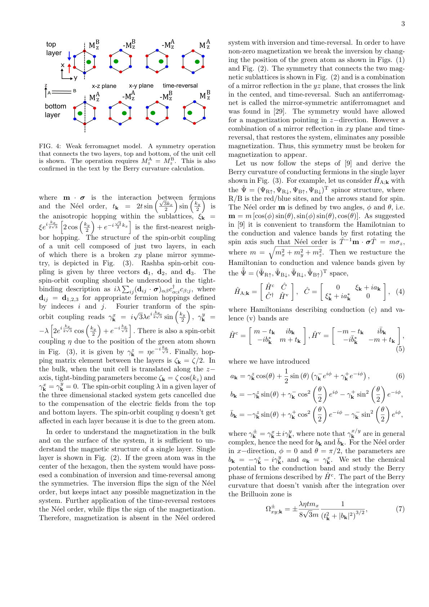
<figcaption class="paper-figure-caption"><b>Fig 2.</b> Low-resolution page preview, page 3</figcaption>
</figure>
<figure class="paper-figure-card">
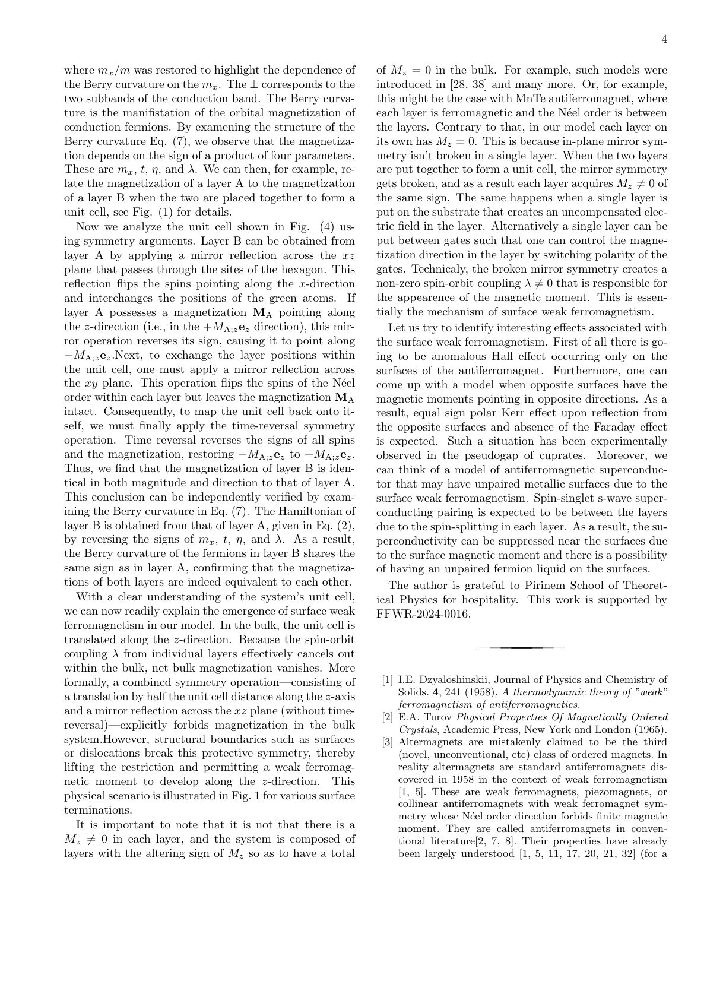
<figcaption class="paper-figure-caption"><b>Fig 3.</b> Low-resolution page preview, page 4</figcaption>
</figure>
<figure class="paper-figure-card">
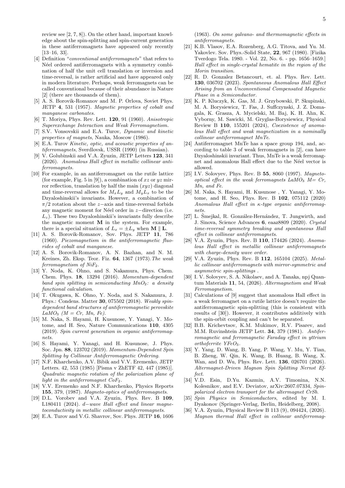
<figcaption class="paper-figure-caption"><b>Fig 4.</b> Low-resolution page preview, page 5</figcaption>
</figure>
<figure class="paper-figure-card">
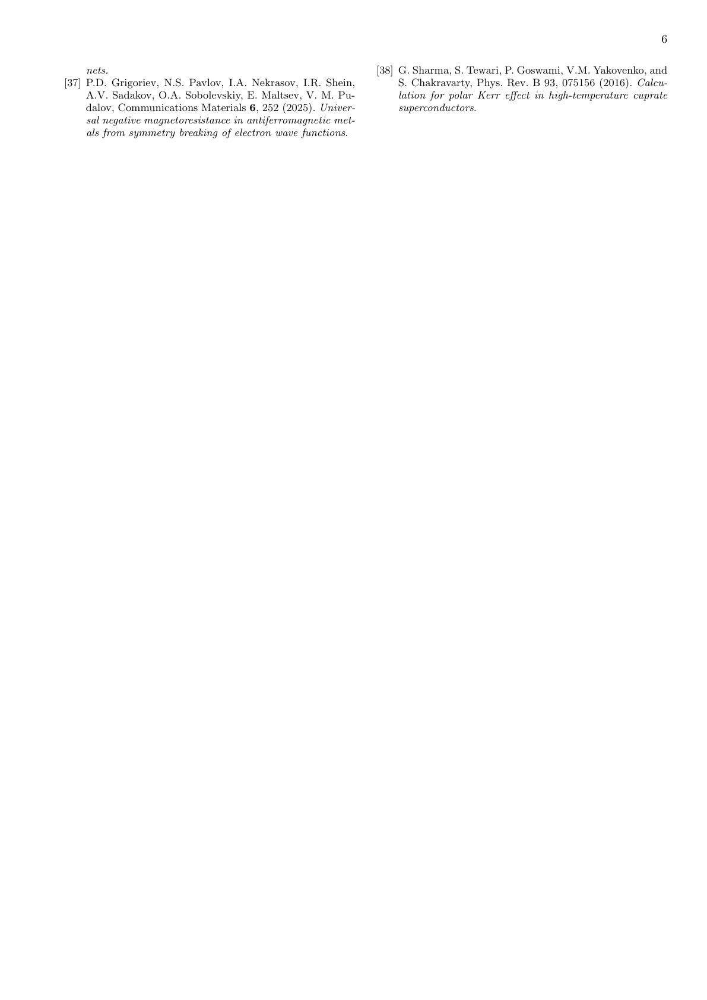
<figcaption class="paper-figure-caption"><b>Fig 5.</b> Low-resolution page preview, page 6</figcaption>
</figure>
</div>

<p><strong>Summary.</strong> This theoretical work proposes a mechanism where weak ferromagnetism appears at the surface of an antiferromagnet due to broken crystal symmetries interacting with spin-orbit coupling. By analyzing symmetry constraints on the electronic Hamiltonian, the authors show that while the bulk magnetic moment cancels out, the surfaces retain a net magnetization, leading to distinct magneto-optical signatures.</p>
<p><strong>Why it may be interesting.</strong> While focused on condensed matter magnetism, the detailed use of symmetry invariants (like Dzyaloshinskii's) and band structure calculations involving spin-orbit coupling is highly relevant for understanding topological properties in quantum materials that might interface with AMO systems.</p>
<details>
<summary>Detailed structure</summary>
<p><strong>Main problem.</strong> The paper models the emergence of weak ferromagnetism at the surface of an otherwise Néel-ordered antiferromagnet.</p>
<p><strong>Main result.</strong> Surface symmetry breaking, induced by spin-orbit coupling, stabilizes a net magnetic moment solely at the boundaries, leading to unique magneto-optical responses like a finite Kerr effect with zero Faraday effect for certain terminations.</p>
<p><strong>Method.</strong> The analysis uses tight-binding models and detailed symmetry group theory (time-reversal, mirror reflection) applied to the fermionic Hamiltonian.</p>
<p><strong>Model / system.</strong> The system is an antiferromagnet modeled by two stacked layers (A and B) with N\'eel order. The physics is governed by a Hamiltonian incorporating spin-orbit coupling ($\lambda$) terms arising from broken surface symmetries.</p>
<p><strong>Key observables.</strong> Surface weak ferromagnetism ($ ext{M}<em _pm="\pm">z 
eq 0$), Faraday effect, Kerr effect, Berry curvature ($\Omega</em>$), and Dzyaloshinskii invariants.}^{xy;k</p>
<p><strong>Important parameters / regimes.</strong> Spin-orbit coupling strength ($\lambda$), interlayer interactions (antiferromagnetic/ferromagnetic), and the specific crystal termination geometry.</p>
<p><strong>Assumptions / limitations.</strong> The bulk cancellation of spin-orbit coupling is attributed to field compensation between top and bottom layers, while surface effects break this symmetry.</p>
<p><strong>Figures summary.</strong> Figures illustrate the two-layer unit cell, the necessary symmetry operations (e.g., breaking $xy$ plane mirror reflection), and the resulting structure of the Rashba-type spin-orbit coupling terms ($   ext{d}_1,   ext{d}_2,   ext{d}_3$).</p>
<p><strong>Paper structure.</strong> The paper develops the model by first defining the Hamiltonian for the stacked layers, then using symmetry analysis to show why bulk magnetization cancels out, and finally demonstrating how surface termination breaks these symmetries to induce a net surface magnetic moment.</p>
</details>
<details>
<summary>Abstract</summary>
<p>This paper proposes a model of a Néel-ordered antiferromagnet exhibiting a weak ferromagnetic moment restricted to the crystal surface, generated by spin-orbit coupling induced by broken surface symmetries. Depending on crystal termination, the surface magnetic moment can align with identical or opposing signs on the top and bottom surfaces, resulting in a zero Faraday effect paired with a finite Kerr effect upon reflection for the latter configuration.</p>
</details>
<p><sub><a href="#top">↑ back to top</a></sub></p>

<p><a id="paper-2608.16711"></a></p>
<h3 id="proximity-induced-superconductivity-in-a-bilayer-graphene-quantum-point-contact"><a href="http://arxiv.org/abs/2608.16711v1">Proximity-induced superconductivity in a bilayer graphene quantum point contact</a></h3>
<p><strong>Authors:</strong> Clara Galante-Agero, Christoph Adam, Artem O. Denisov, Jonas D. Gerber, Markus Niese, Alexandra Mestre-Torà, Marta Perego, Jessica Richter, Takashi Taniguchi, Kenji Watanabe, Klaus Ensslin, Thomas Ihn<br>
<strong>Type:</strong> experiment · <strong>Category:</strong> other · <strong>PDF:</strong> <a href="https://arxiv.org/pdf/2608.16711v1">https://arxiv.org/pdf/2608.16711v1</a><br>
<strong>Analysis basis:</strong> full PDF text, analyzed in chunks
<strong>Topic relevance:</strong> <code>driven-dissipative phase transition</code> <strong>2/5</strong> · <code>correlated / nonlocal dissipation</code> <strong>1/5</strong> · <code>non-equilibrium universality</code> <strong>1/5</strong> · <code>quantum measurements</code> <strong>1/5</strong></p>
<div class="figure-strip-hint">↔ Scroll figures horizontally</div>
<div class="paper-figures-scroll">
<figure class="paper-figure-card">
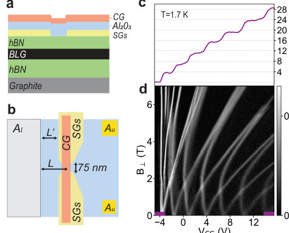
<figcaption class="paper-figure-caption"><b>Fig 1.</b> FIG. 1. (a) Schematic cross section of the device. The bi- layer graphene (BLG) encapsulated in hexagonal boron ni- tride (hBN), and the channel gate (CG) and split gates (SGs) are indicated. (b) Schematic top view of the device with alu- minium Al and gold Au contacts to the graphene displayed. The distances L and L′ are approximately 350 nm and 100 nm, respectively. The gap between SGs is 75 nm as indicated. (c) Conductance measurements at 1.7 K and B⊥= 0. Gn denotes the QPC conductance in the normal state. (d) Transcon- ductance of the QPC as a function of the out-of-plane mag- netic field and CG voltage VCG. Black regions correspond to plateaus in conductance.</figcaption>
</figure>
<figure class="paper-figure-card">
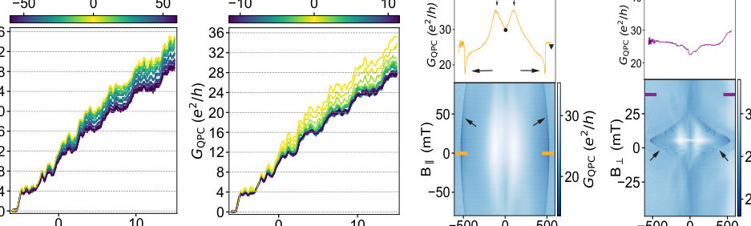
<figcaption class="paper-figure-caption"><b>Fig 2.</b> FIG. 2. Conductance measurements at 10 mK. (a,b) QPC conductance as a function of channel gate voltage VCG, and in-plane B∥(a) and out-of-plane B⊥(b) magnetic field. (c) GQPC as a function of in-plane field B∥and source-drain bias voltage Vsd, at a fixed channel gate voltage VCG = 11 V. The top curve shows the conductance trace at B∥= 0. Two conductance peaks are observed, from which the superconducting gap, ∆, is extracted. Black arrows indicate the anomalous dip in conductance, marking the collapse of the Andreev excess current. (d) Conductance as a function of out-of-plane field B⊥and bias voltage Vsd, at the same fixed channel gate voltage VCG = 11 V. The top curve shows the conductance...</figcaption>
</figure>
<figure class="paper-figure-card">
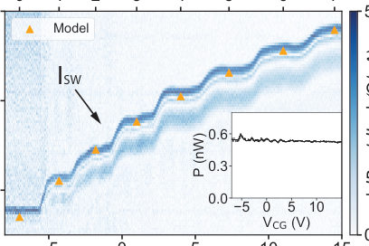
<figcaption class="paper-figure-caption"><b>Fig 3.</b> FIG. 3. Switching current as a function of channel gate, when the device is tuned into a quantum point contact. The arrow highlights the anomalous peak in the differential re- sistance R (equivalently to a differential conductance dip), from which Isw is read off. To enhance the visibility of the above-gap anomaly, the color plot shows the numerical deriva- tive of the differential resistance with respect to the DC cur- rent. The derivative is taken to remove the background re- sistance, which changes significantly as the QPC modes are sequentially opened. The orange triangles show the expected switching current according to the dissipation-based model as a function of mode number N, taking...</figcaption>
</figure>
<figure class="paper-figure-card">
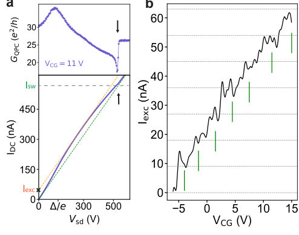
<figcaption class="paper-figure-caption"><b>Fig 4.</b> FIG. 4. (a) Example of the extraction of the excess current for a fixed channel gate voltage VCG = 11 V. The top curves show the differential conductance, where an anomalous dip, indicated by the black arrow, marks the superconducting to normal transition. The bottom plot shows the current-voltage curve, I(V ), obtained by integrating the QPC differential con- ductance shown in the top curve. The orange dashed line shows that as the bias voltage increases above the supercon- ducting gap, the I −V develops a current offset corresponding to Iexc. The green dashed line indicates the normal quasiparti- cle branch, where no excess current is present. (b) Extracted excess current as a function of...</figcaption>
</figure>
</div>

<p><strong>Summary.</strong> The researchers studied superconductivity in a graphene QPC coupled to an aluminum superconductor. They demonstrated that the quantized one-dimensional electronic modes of the QPC dictate both the equilibrium proximity effect (enhanced conductance via Andreev reflection) and the non-equilibrium dynamics, evidenced by stepwise changes in the superconducting breakdown current.</p>
<p><strong>Why it may be interesting.</strong> This work provides a clean experimental realization where fundamental quantum confinement (1D modes) dictates both the ground state superconducting properties (Andreev reflection) and the dynamic breakdown mechanisms, which is highly relevant for understanding mesoscopic superconducting circuits.</p>
<details>
<summary>Detailed structure</summary>
<p><strong>Main problem.</strong> To investigate how quantized one-dimensional transport modes of a Quantum Point Contact (QPC) govern both the equilibrium proximity effect and the non-equilibrium dynamics in a hybrid superconducting/normal conductor system.</p>
<p><strong>Main result.</strong> The excess supercurrent and the switching current associated with superconductivity loss both exhibit discrete, quantized steps that directly follow the opening of successive QPC transport modes.</p>
<p><strong>Method.</strong> Measurements include linear conductance ($G$) vs. gate voltage and finite-bias spectroscopy ($\partial G/\partial V_{sd}$), supplemented by analyzing superconducting-to-normal transition currents ($I_{sw}$).</p>
<p><strong>Model / system.</strong> The system is a gate-defined QPC realized in bilayer graphene (BLG) proximitized by an aluminum superconductor, allowing study of Andreev reflection and proximity effects.</p>
<p><strong>Key observables.</strong> Enhanced conductance plateaus (Andreev enhancement), superconducting gap ($\Delta$), above-gap conductance anomaly (dip marking superconductivity loss), excess current ($I_{exc}$), and switching current ($I_{sw}$).</p>
<p><strong>Important parameters / regimes.</strong> Low temperatures ($T=10 	ext{ mK}$), gate voltage ($V_{	ext{CG}}$) controlling mode quantization, and source-drain bias voltage ($V_{	ext{sd}}$).</p>
<p><strong>Assumptions / limitations.</strong> The analysis assumes that the superconducting gap features are robust indicators of proximity effects, and $I_{exc}$ is extracted by careful subtraction to minimize extrapolation errors.</p>
<p><strong>Figures summary.</strong> Figures show quantized normal state conductance plateaus; finite-bias spectroscopy reveals coherence peaks at $\pm\Delta/e$ and an anomalous dip above the gap; switching current measurements demonstrate stepwise transitions correlated with QPC mode opening.</p>
<p><strong>Paper structure.</strong> The paper systematically measures transport properties across different regimes: first establishing ballistic quantization, then observing Andreev enhancement in equilibrium, followed by characterizing the non-equilibrium collapse of superconductivity via conductance anomalies and quantized switching currents.</p>
</details>
<details>
<summary>Abstract</summary>
<p>We report the realization of a gate-defined quantum point contact (QPC) in bilayer graphene proximitized by a single aluminum superconducting electrode. Superconducting correlations induced in the ballistic channel enhance the conductance plateaus beyond their normal-state values. In addition, we observe a pronounced above-gap conductance anomaly which serves as a spectroscopic signature of the loss of superconductivity and the associated collapse of the Andreev excess current. By reconstructing the nonlinear current-voltage characteristics, we find that the magnitude of the excess current increases as successive QPC modes are populated. Additionally, we find that the switching current associated with the loss of superconductivity follows the underlying mode structure of the QPC, exhibiting discrete levels consistent with a heat dissipation-driven transition. These results demonstrate that the one-dimensional transport modes of the QPC govern both the equilibrium proximity effect and the non-equilibrium dynamics of the hybrid system.</p>
</details>
<p><sub><a href="#top">↑ back to top</a></sub></p>

<p><a id="paper-2608.14983"></a></p>
<h3 id="symmetry-tunable-skyrmions-and-merons-in-magnetic-nanodisks-via-spatially-engineered-anisotropy"><a href="http://arxiv.org/abs/2608.14983v1">Symmetry-Tunable Skyrmions and Merons in Magnetic Nanodisks via Spatially Engineered Anisotropy</a></h3>
<p><strong>Authors:</strong> X. D. Wang, J. F. Oliveira da Silva, Z. H. Tao, H. M. Dong, K. Chang, M. V. Milošević<br>
<strong>Type:</strong> theory · <strong>Category:</strong> other · <strong>PDF:</strong> <a href="https://arxiv.org/pdf/2608.14983v1">https://arxiv.org/pdf/2608.14983v1</a><br>
<strong>Analysis basis:</strong> full PDF text, analyzed in chunks
<strong>Topic relevance:</strong> <code>analog quantum simulation</code> <strong>2/5</strong> · <code>Frenkel-Kontorova</code> <strong>1/5</strong> · <code>Keldysh / 2PI / non-Gaussian methods</code> <strong>1/5</strong> · <code>interference shaping light</code> <strong>1/5</strong></p>
<div class="figure-strip-hint">↔ Scroll figures horizontally</div>
<div class="paper-figures-scroll">
<figure class="paper-figure-card">

<figcaption class="paper-figure-caption"><b>Fig 1.</b> Figure 1: Schematic model of the proposed non-chiral magnetic nanodisks by design, with radius R = 250 nm and thickness d0: (a) a skyrmion within an IMA nanoring of width R1 = 200 nm, with strong PMA materials in its center of radius R0 = 50 nm, and beyond the outer edge, and (b) a meron within an IMA nanoring of the same size with PMA material only in its center. (c) Schematic of SW control using anisotropy-engineered skyrmions. 3D spin structures are shown in (a) and (b), respectively.</figcaption>
</figure>
<figure class="paper-figure-card">
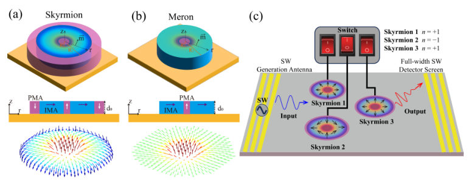
<figcaption class="paper-figure-caption"><b>Fig 2.</b> Figure 1(b). Figure 1(c) shows a proof-of-concept spin-wave control setup using anisotropy-</figcaption>
</figure>
<figure class="paper-figure-card">
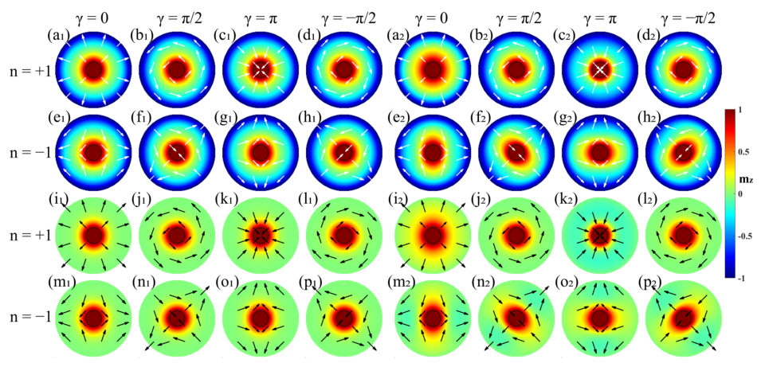
<figcaption class="paper-figure-caption"><b>Fig 3.</b> Figure 2: The in-plane spin configurations of skyrmions stabilized by constrained analytical solutions: (a1-h1) for skyrmions and anti-skyrmions, (i1-p1) for merons and anti-merons without DMI; (a2-h2) for skyrmions and anti-skyrmions, (i2-p2) for merons and anti-merons with DMI. The used parameters are A = 16 pJ/m, KPMA = 3.6 MJ/m3 for PMA value, and the indicated IMA values of KIMA = 5 KJ/m3 and D = 0.4 mJ/m2.</figcaption>
</figure>
<figure class="paper-figure-card">
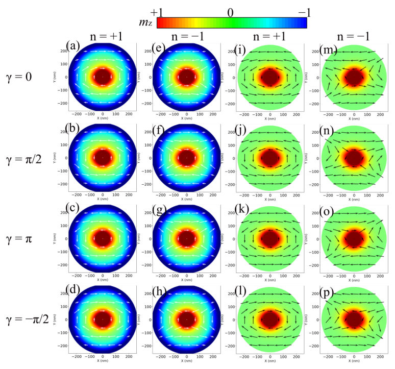
<figcaption class="paper-figure-caption"><b>Fig 4.</b> Figure 3: The micromagnetic simulated in-plane spin configurations of skyrmions (a-h) and merons (i-p) in the absence of DMI (D = 0) with dipolar interactions, respectively. The simulation parameters are A = 16 pJ/m, KPMA = 3.6 MJ/m3 for PMA value, and the indicated IMA values of KIMA = 5 KJ/m3.</figcaption>
</figure>
<figure class="paper-figure-card">
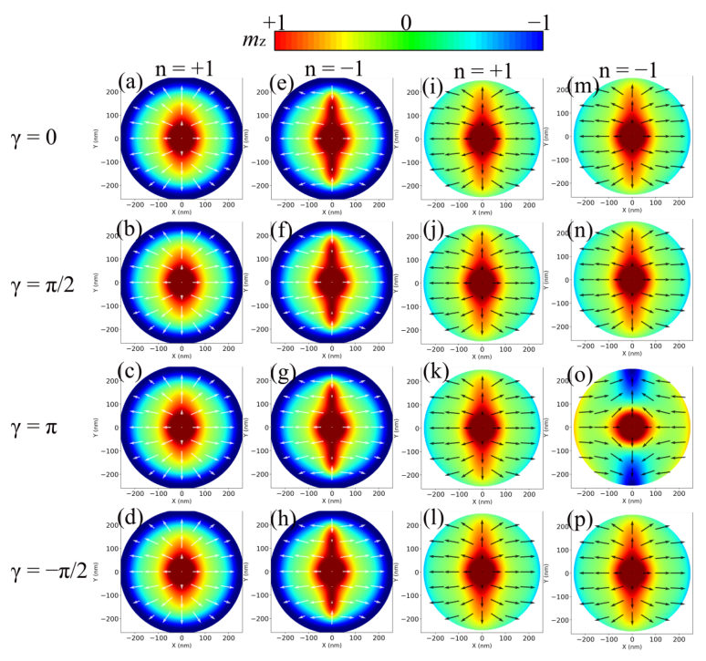
<figcaption class="paper-figure-caption"><b>Fig 5.</b> Figure 4: The micromagnetic simulated in-plane spin configurations of skyrmions (a-h) and merons (i-p) in the presence of DMI with dipolar interactions, respectively. The simulation parameters are A = 16 pJ/m, KPMA = 3.6 MJ/m3 for PMA value, and the indicated IMA values of KIMA = 5 KJ/m3 and D = 0.4 mJ/m2.</figcaption>
</figure>
</div>

<p><strong>Summary.</strong> This work demonstrates that magnetic skyrmion and meron textures can be stabilized in nanodisks purely by patterning the magnetocrystalline anisotropy, bypassing the need for the Dzyaloshinskii-Moriya interaction. Using micromagnetic simulations, the authors show this patterned structure allows for deterministic control over topology and, crucially, enables arrays of these defects to act as reconfigurable elements for controlling spin-wave transmission.</p>
<p><strong>Why it may be interesting.</strong> While focused on condensed matter magnetism, the concept of engineering local symmetries and topological defects (skyrmions) for controlled wave propagation shares conceptual links with engineered quantum waveguides or artificial lattices used in AMO physics.</p>
<details>
<summary>Detailed structure</summary>
<p><strong>Main problem.</strong> The primary goal is stabilizing tunable skyrmion and meron spin textures in magnetic nanodisks without relying on the Dzyaloshinskii-Moriya interaction (DMI). This addresses limitations in using centrosymmetric magnets.</p>
<p><strong>Main result.</strong> Spatially engineered anisotropy, combining perpendicular and in-plane components, can deterministically stabilize these topological textures. Furthermore, arrays of such structures can be used to control spin-wave transmission by manipulating vorticity arrangement.</p>
<p><strong>Method.</strong> The study employs a combination of constrained analytical modeling and unconstrained micromagnetic simulations to solve the governing partial differential equation derived from minimizing the total energy functional.</p>
<p><strong>Model / system.</strong> The system is magnetic nanodisks where the magnetization dynamics are governed by an energy functional incorporating exchange, anisotropy (both perpendicular and in-plane), dipolar, and DMI terms. The key mechanism involves patterning the anisotropy to break symmetry artificially.</p>
<p><strong>Key observables.</strong> Topological charge (Q), in-plane spin configurations, and transverse deflection/control of transmitted spin waves (SW).</p>
<p><strong>Important parameters / regimes.</strong> The relative strengths of perpendicular magnetic anisotropy ($K_{	ext{PMA}}$) versus engineered in-plane uniaxial anisotropy ($    ext{IMA}$); the presence or absence of DMI.</p>
<p><strong>Assumptions / limitations.</strong> The model utilizes the Landau-Lifshitz continuum approximation, and while presented as generalizable, specific material choices are suggested for validation.</p>
<p><strong>Figures summary.</strong> Figures illustrate schematic models showing skyrmion/meron stabilization via anisotropy patterning (IMA ring in PMA background), show spin configurations with and without DMI, and demonstrate SW propagation control through engineered arrays.</p>
<p><strong>Paper structure.</strong> The paper progresses by first establishing the theoretical framework for topological stability using patterned anisotropy. It then uses simulations to compare DMI-free vs. DMI-present states, culminating in a demonstration of how these structures can function as reconfigurable magnonic elements controlling spin waves.</p>
</details>
<details>
<summary>Abstract</summary>
<p>We demonstrate that spatially engineered magnetic anisotropy can stabilize skyrmion and meron spin textures in magnetic nanodisks even in the absence of Dzyaloshinskii-Moriya interaction (DMI). Using a constrained analytical model and micromagnetic simulations, we show that competing perpendicular and in-plane anisotropies can generate non-collinear topological textures in non-chiral magnetic systems. We further show that DMI and dipolar interactions lift the helicity degeneracy and select preferred chiral configurations; micromagnetic simulations were used to identify physically stable states. These results establish anisotropy-patterned nanodisks as a platform for studying DMI-free topological spin textures and their controllable magnetic response. We also show that arrays of anisotropy-engineered skyrmions can control spin-wave transmission by manipulating their vorticity arrangement, pointing to reconfigurable magnonic elements based on non-chiral topological textures.</p>
</details>
<p><sub><a href="#top">↑ back to top</a></sub></p>

<p><a id="paper-2608.15911"></a></p>
<h3 id="external-identification-and-electrothermal-modeling-of-persistent-current-switch-operating-states-in-a-siemens-mri-magnet"><a href="http://arxiv.org/abs/2608.15911v1">External identification and electrothermal modeling of persistent-current-switch operating states in a Siemens MRI magnet</a></h3>
<p><strong>Authors:</strong> Volodymyr Pupkov<br>
<strong>Type:</strong> both · <strong>Category:</strong> other · <strong>PDF:</strong> <a href="https://arxiv.org/pdf/2608.15911v1">https://arxiv.org/pdf/2608.15911v1</a><br>
<strong>Analysis basis:</strong> full PDF text, analyzed in chunks
<strong>Topic relevance:</strong> <code>quantum measurements</code> <strong>2/5</strong> · <code>driven-dissipative phase transition</code> <strong>1/5</strong> · <code>methods for driven-dissipative</code> <strong>1/5</strong></p>
<div class="figure-strip-hint">↔ Scroll figures horizontally</div>
<div class="paper-figures-scroll">
<figure class="paper-figure-card">
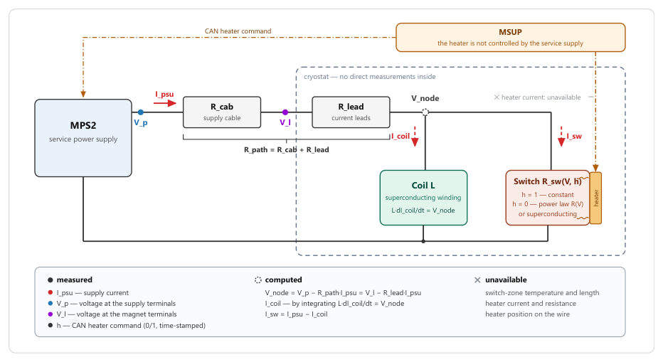
<figcaption class="paper-figure-caption"><b>Fig 1.</b> Figure 1: The “coil ∥PCS” node and the measurement access. Directly recorded are Ipsu, Vp, Vl, and the CAN heater command h, which arrives through the external magnet supervision module (MSUP); the node voltage and the currents of the parallel branches are computed with the full external path Rpath = Rcab +Rlead taken into account. Solid lines — measured quantities, dashed — computed; the gray cryostat area is inaccessible to direct measurement.</figcaption>
</figure>
<figure class="paper-figure-card">
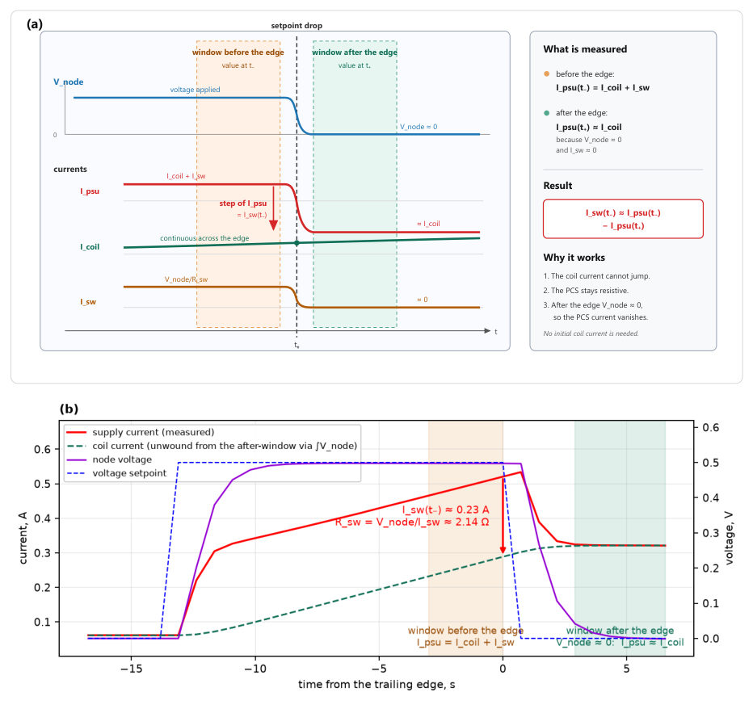
<figcaption class="paper-figure-caption"><b>Fig 2.</b> Figure 2: Principle of the trailing-edge technique. (a) Scheme: in the window before the setpoint drop, the supply carries the sum Icoil + Isw; in the window after the edge, the coil current has barely changed, while at Vnode ≈0 the resistive-branch current is close to zero. The step in the measured Ipsu therefore yields Isw before the edge. The curves are schematic and not to scale. (b) The same technique applied to a recorded 0.5 V pulse from the series in Fig. 5: when the setpoint is dropped, the measured supply current falls toward the coil current, and the step height yields Isw(t−) = 0.232 A and Rsw = 2.14 Ω— within the ranges of the series (0.230–0.232 A and 2.08–2.15 Ω, Section...</figcaption>
</figure>
<figure class="paper-figure-card">
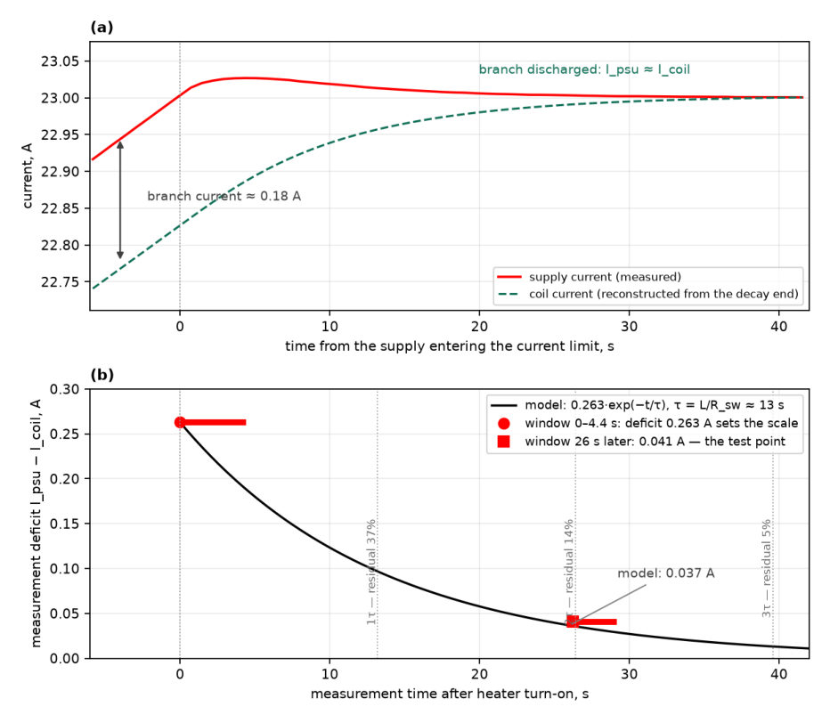
<figcaption class="paper-figure-caption"><b>Fig 3.</b> Figure 3: Coil-current pickup and the effect of the hold. (a) Free current redistribution in a recorded pickup session: after the supply reaches the current limit, the measured Ipsu is nearly constant while the PCS-branch current (≈0.18 A) transfers into the coil — the reconstructed Icoil converges to the measured current. (b) The measurement deficit Ipsu −Icoil for the two pickup windows as a function of time after the heater turn-on. The window that started simultaneously with the turn-on falls within the transient, gives 0.263 A, and sets the scale of the model 0.263 · exp(−t/τ) with τ = L/Rsw ≈13 s; the window 26 s later gives 0.041 A, compared with the model value of 0.037 A, and is...</figcaption>
</figure>
<figure class="paper-figure-card">
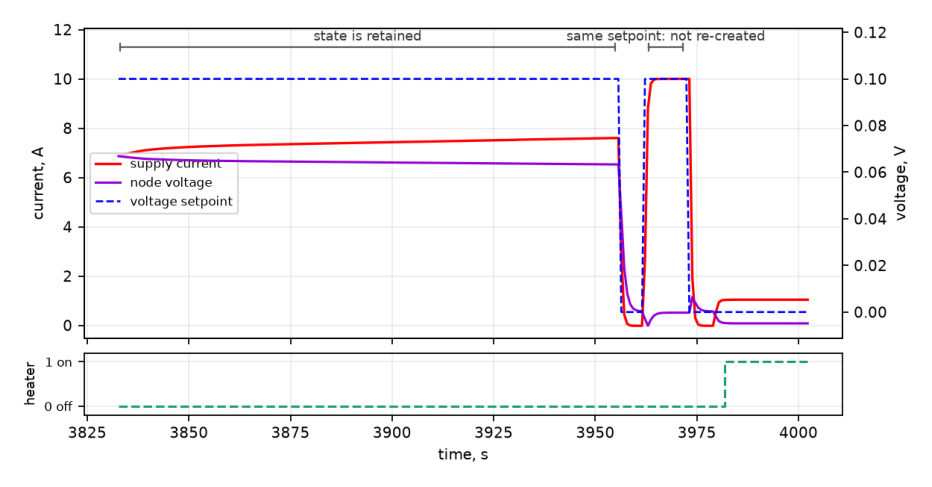
<figcaption class="paper-figure-caption"><b>Fig 4.</b> Figure 4: Initiating ̸= sustaining: the same 0.10 V setpoint sustains an existing resistive state but does not re-create it after a four-second reset. After the setpoint returns, the node voltage stays near zero and the supply current reaches the limit. The bottom lane is the CAN heater command (1 — on, 0 — off): both compared episodes run at h = 0; the heater is switched on again only at the end of the window.</figcaption>
</figure>
<figure class="paper-figure-card">

<figcaption class="paper-figure-caption"><b>Fig 5.</b> Figure 5: Seven pulses at a 0.5 V setpoint with the heater on continuously. The settled pulses are annotated with the resistance from the trailing-edge technique (Section 4.1): 2.08–2.15 Ω at heater operating times of 109–819 s. No systematic trend with duration is visible; the full resistance range is 3.3 %, and the branch current changes by less than 1 %. The first pulse preceded the long zero pause needed for the independent determination of the coil current and is excluded from the statistics. The bottom lane is the CAN heater command, which stays on throughout the series.</figcaption>
</figure>
</div>

<p><strong>Summary.</strong> This paper develops a detailed electrothermal model for a Persistent Current Switch (PCS) in an MRI magnet, moving beyond simple on/off control. By analyzing external voltage and current logs, the authors quantify how Joule self-heating sustains resistive states after the heater is turned off. The resulting model significantly improves the accuracy of dynamic simulations describing the complex switching behavior.</p>
<p><strong>Why it may be interesting.</strong> While focused on classical superconducting magnet engineering, the underlying principle of modeling hysteretic, non-linear, history-dependent electrical switching behavior is relevant to understanding quantum circuit switches or Josephson junction dynamics where state transitions are critical.</p>
<details>
<summary>Detailed structure</summary>
<p><strong>Main problem.</strong> To move beyond treating Persistent Current Switch (PCS) control as purely binary, the authors quantitatively model its operating states by accounting for Joule self-heating effects after heater deactivation.</p>
<p><strong>Main result.</strong> The proposed electrothermal model successfully describes both resistive regimes using a unified relation, significantly improving dynamic simulation accuracy compared to simpler models.</p>
<p><strong>Method.</strong> The study combines external electrical measurements from service sessions with detailed electrothermal modeling and dynamic simulations.</p>
<p><strong>Model / system.</strong> The system is a superconducting MRI magnet containing a PCS connected in parallel with the main coil. The model treats the PCS resistance as dependent on both node voltage and heater command, governed by an electrothermal balance equation.</p>
<p><strong>Key observables.</strong> Branch resistance ($R_{sw}$), self-sustainment boundary voltage ($\approx 0.062	ext{ V}$), current Root Mean Square Error (RMSE).</p>
<p><strong>Important parameters / regimes.</strong> Inductance ($L$), time constant ($ au = L/R_{sw}$), heater command ($h$), and the electrothermal relation coefficients ($C, a$).</p>
<p><strong>Assumptions / limitations.</strong> The model parameters are specific to the tested Siemens Avanto unit and do not automatically transfer to other magnets or full operating currents.</p>
<p><strong>Figures summary.</strong> Not specified (Analysis relies on logs of current/voltage over time).</p>
<p><strong>Paper structure.</strong> The paper analyzes external electrical measurements from service sessions, develops a unified electrothermal model linking two distinct resistive regimes (heater-on vs. self-sustained), and validates the model using dynamic simulations.</p>
</details>
<details>
<summary>Abstract</summary>
<p>A persistent current switch (PCS) closes the superconducting loop of an MRI magnet; a heater makes it resistive so an external supply can change the magnet current. PCS control is usually treated as binary: heater on--resistive, heater off--superconducting. External current and voltage logs from an MPS2 service power supply (Digit Systems) show for a Siemens MAGNETOM Avanto magnet that the command does not uniquely determine the PCS state: after heater switch-off, Joule self-heating can sustain the resistive state. Purpose-designed maneuvers separate two resistive regimes. With the heater energized, the branch resistance is nearly constant at 1.86--2.19 $Ω$ below 0.5 V. After switch-off, the self-sustained regime follows $R_{sw}=0.65|V_{node}|^{1.5}$ ($R_{sw}$ in ohms, $V_{node}$ in volts) and is 12-fold below the heater-on resistance at 0.4 V. Both regimes obey one electrothermal relation, $R_{sw}=C(P_h h+V_{node}^2/R_{sw})^a$, with $h$ the binary heater command, over a 690-fold resistance range. First, branch resistance and coil inductance set the redistribution time constant, $τ=L/R_{sw}$; final-hold duration therefore controls persistent-current accuracy. Across 18 service sessions on other Siemens magnets, analyzed without transferring the Avanto coefficients, the median hold was $13τ$ and the median residual branch current was 8 ppm of coil current. Second, the intersection of the PCS characteristic and external-circuit load line sets the self-sustainment boundary. The cross-session estimate of 0.062 V lies between observed retrapping at 0.06 V and retention at 0.07 V. In dynamic simulation, the two fixed-coefficient characteristics $R(V,h)$ reduce current RMSE from 1.449 to 0.154 A (9.4-fold); omitting explicit heater input gives no improvement over the inductance-only model.</p>
</details>
<p><sub><a href="#top">↑ back to top</a></sub></p>

<p><a id="paper-2608.15495"></a></p>
<h3 id="a-cold-insertable-scanning-probe-microscope-for-dry-dilution-refrigerators-with-picometer-stability-and-ultra-low-electron-temperatures"><a href="http://arxiv.org/abs/2608.15495v1">A cold-insertable scanning probe microscope for dry dilution refrigerators with picometer stability and ultra-low electron temperatures</a></h3>
<p><strong>Authors:</strong> Yizhou Wei, Berthold Jäck<br>
<strong>Type:</strong> experiment · <strong>Category:</strong> other · <strong>PDF:</strong> <a href="https://arxiv.org/pdf/2608.15495v1">https://arxiv.org/pdf/2608.15495v1</a><br>
<strong>Analysis basis:</strong> full PDF text, analyzed in chunks
<strong>Topic relevance:</strong> <code>quantum measurements</code> <strong>2/5</strong></p>
<div class="figure-strip-hint">↔ Scroll figures horizontally</div>
<div class="paper-figures-scroll">
<figure class="paper-figure-card">

<figcaption class="paper-figure-caption"><b>Fig 1.</b> FIG. 1. Overview of representative AFM-based scanning probe techniques and their vibration, and temperature performance. (a) Representative atomic force microscopy (AFM)-based scanning probe techniques for locally measuring diverse physical properties of novel materials, including electric fields E, magnetic fields B, chem- ical potential µ, electrical conductivity σ, and other material prop- erties. (b) Frequency-dependent vertical displacement noise spectral density measured on the mixing-chamber plate of a Leiden Cryo- genics CS-SF 110 dilution refrigerator with the pulse tube cooler (PT) switched on (red) and off (black). (c) Overview of the tem- peratures and relative tip-sample...</figcaption>
</figure>
<figure class="paper-figure-card">

<figcaption class="paper-figure-caption"><b>Fig 2.</b> FIG. 2. Assembly and vibration-isolation architecture of the ultralow-noise, millikelvin AFM integrated into a cryogen-free dilution refrigerator. (a) Schematic of the complete instrument and its multistage vibration-isolation architecture. The dominant vibration sources are building-borne vibrations, characterized by the displacement-noise spectral density SB(f), and vibrations generated by the pulse-tube (PT) cryocoolers, characterized by SPT(f). Both contributions are jointly attenuated by a combination of active vibration-isolation stages and an internal passive isolation system at the mixing-chamber (MXC) stage. In the passive system, the suspension springs provide an effective spring...</figcaption>
</figure>
<figure class="paper-figure-card">

<figcaption class="paper-figure-caption"><b>Fig 3.</b> FIG. 3. Design of a mixing chamber attachment for vibration- isolation design of the AFM module. (a) Shown is the MXC at- tachment comprising the AFM module, which is suspended by three CuBe springs providing the effective spring constant kAFM and cou- pled to a home-built damper providing the damping coefficient cAFM, together forming a critically damped isolation stage. The MXC at- tachment is realized using a scaffold to support the damping stage at the bottom and comprises a link structure for enhanced mechani- cal rigidity and as a thermalization point. (b) Calculated frequency- dependent vibration transmission efficiency. The characteristic fre- quencies are the suspension resonance...</figcaption>
</figure>
<figure class="paper-figure-card">

<figcaption class="paper-figure-caption"><b>Fig 4.</b> FIG. 4. Microwave impedance microscopy circuit configuration, noise characterization, and representative imaging results. (a) Schematic of the sMIM circuit. The output of the microwave source (MWS)33 is routed via a three-way power splitter to hand-formable microwave cables leading to the mixing chamber, and then via flexible cables34 to the AFM head. An impedance matching network (a 0.1pF capacitor to the tip wire) couples the signal to the AFM tip-sample junction25. The reflected measurement signal is separated using a unidirectional coupler (UDC)35 at the mixing chamber. A cancellation line—adjusted via a phase shifter (PS)36 and tunable attenuator (ATT)37—suppresses the common mode...</figcaption>
</figure>
<figure class="paper-figure-card">

<figcaption class="paper-figure-caption"><b>Fig 5.</b> FIG. 5. Thermalization and filtering architecture of the AFM module and electron-temperature characterization. (a) Schematic of the thermal links, electrical wiring, and filtering scheme realized on the cold-insertable probe of the dilution refrigerator. The purple, orange, and blue lines denote the AFM signal, piezo-actuator drive lines, and sample signal lines, respectively. The labeled components are the direct thermal link between the mixing-chamber (MXC) stage and the AFM module (1), filters at the 10-mK stage44 (2), room-temperature filters43 (3), and the AFM signal amplifier48 (4). (b,c) Home-designed, gold-plated OFHC Cu thermal links: a laser-cut flexible Cu foil thermally...</figcaption>
</figure>
</div>

<p><strong>Summary.</strong> The paper introduces a novel, modular scanning probe microscope designed for use in dry dilution refrigerators. By combining advanced mechanical isolation techniques with optimized thermal management, the authors overcome the trade-off between vibration damping and low temperature. This allows for high-resolution measurements at picometer stability while keeping sample electron temperatures extremely low.</p>
<p><strong>Why it may be interesting.</strong> This work is highly relevant to experimental quantum physics as it provides a robust platform for probing fragile quantum phases in extreme cryogenic environments where mechanical stability and thermal control are often mutually exclusive goals.</p>
<details>
<summary>Detailed structure</summary>
<p><strong>Main problem.</strong> The primary challenge is implementing high-resolution scanning probe microscopy (SPM) techniques, like AFM, in cryogen-free dilution refrigerators while simultaneously achieving picometer mechanical stability and ultra-low sample electron temperatures.</p>
<p><strong>Main result.</strong> The authors successfully demonstrated a modular system that achieves sub-Angstrom tip-sample vibration stability ($\approx 10 	ext{ pm}$) while maintaining local sample electron temperatures below $60 	ext{ mK}$.</p>
<p><strong>Method.</strong> They employed a two-pronged design strategy: mechanically isolating the AFM module using a critically damped spring suspension, and optimizing thermal links with custom copper strapping to manage heat flow.</p>
<p><strong>Model / system.</strong> The system is an AFM-based scanning microwave impedance microscope integrated onto a cold-insertable probe within a dry dilution refrigerator. Key components include OFHC Cu machining for structural integrity and specialized damping stages to counteract intense pulse tube mechanical noise.</p>
<p><strong>Key observables.</strong> Relative tip-sample vibration noise density ($S_{	ext{AFM}}(f) < 10^{-11} 	ext{ m}/\sqrt{	ext{Hz}}$), spectrally integrated displacement ($\Delta z \approx 10 	ext{ pm}$), and local sample electron temperature ($T_e \le 60 	ext{ mK}$).</p>
<p><strong>Important parameters / regimes.</strong> Picometer stability, $T_e \le 60 	ext{ mK}$, $>100$-fold improvement in vibration stability over previous setups.</p>
<p><strong>Assumptions / limitations.</strong> The success relies on the assumption that the optimized thermal strapping and filtering architecture can effectively mitigate parasitic heat leaks while allowing for mechanical decoupling.</p>
<p><strong>Figures summary.</strong> Figures illustrate the system schematic, noise spectral density measurements showing successful isolation from PT noise, and plots detailing $T_e$ vs. lattice temperature to confirm cooling efficiency.</p>
<p><strong>Paper structure.</strong> The paper details the initial limitations imposed by cryocooler noise and thermal trade-offs, presents the two-pronged mechanical/thermal design solution (spring suspension, copper strapping), validates the performance metrics ($\Delta z$, $T_e$), and concludes with the modular applicability of the architecture.</p>
</details>
<details>
<summary>Abstract</summary>
<p>Investigating the microscopic mechanisms of quantum materials requires high-resolution scanning probe techniques, often based on atomic force microscopy (AFM). However, implementing AFM in cryogen-free dilution refrigerators with picometer stability is challenged by intense pulse tube mechanical noise ($S_{\rm PT}(f)\approx10^{-6}\,\text{m}/\sqrt{\text{Hz}}$) and the fundamental trade-off with thermalizing piezoelectric motion stages below 100\,mK. Here, we demonstrate an AFM-based scanning microwave impedance microscope integrated onto a standard cold-insertable probe that successfully resolves this bottleneck. By employing a two-pronged design strategy---coupling a mechanically stiff AFM module with a magnetic-field-compatible, critically damped internal spring-suspension---we achieve an extremely low relative tip-sample vibration noise density of $S_{\rm AFM}(f)<10^{-11}\,\text{m}/\sqrt{\text{Hz}}$. This yields a spectrally integrated relative tip-sample displacement of $Δz\approx10\,\text{pm}$, representing a greater than 100-fold stability improvement over recent fast-loading dry SPM setups. Simultaneously, optimized thermal interfaces, customized copper strapping, and comprehensive RF filtering enable a local sample electron temperature of $T_{\rm e}\leq 60\,$mK, circumventing the thermal penalties of mechanical decoupling. By avoiding permanent structural modifications to the host cryostat, this robust, modular architecture provides an accessible framework for adapting other scanning probe techniques, accelerating the exploration of fragile quantum phases in dry cryostats with picometer stability.</p>
</details>
<p><sub><a href="#top">↑ back to top</a></sub></p>

<p><a id="paper-2608.14990"></a></p>
<h3 id="discovering-physically-interpretable-mathematical-expression-for-predicting-co2-adsorption-in-metal-organic-frameworks-via-machine-learning-symbolic-regression"><a href="http://arxiv.org/abs/2608.14990v1">Discovering Physically Interpretable Mathematical Expression for Predicting CO2 Adsorption in Metal-Organic Frameworks via Machine Learning-Symbolic Regression</a></h3>
<p><strong>Authors:</strong> Yimin Shao, Shengluo Ma, Shenghong Ju, Yijun Shi, Wei Li<br>
<strong>Type:</strong> theory · <strong>Category:</strong> disordered systems and neural networks · <strong>PDF:</strong> <a href="https://arxiv.org/pdf/2608.14990v1">https://arxiv.org/pdf/2608.14990v1</a><br>
<strong>Analysis basis:</strong> full PDF text, analyzed in chunks
<strong>Topic relevance:</strong> <code>Keldysh / 2PI / non-Gaussian methods</code> <strong>1/5</strong> · <code>driven-dissipative phase transition</code> <strong>1/5</strong> · <code>methods for driven-dissipative</code> <strong>1/5</strong> · <code>non-equilibrium universality</code> <strong>1/5</strong> · <code>quantum measurements</code> <strong>1/5</strong></p>
<div class="figure-strip-hint">↔ Scroll figures horizontally</div>
<div class="paper-figures-scroll">
<figure class="paper-figure-card">

<figcaption class="paper-figure-caption"><b>Fig 1.</b> Figure 1. Workflow diagram of the machine learning (ML) process. This figure mainly illustrates the 4 key steps employed in this study to obtain interpretable equations. Firstly, a subset containing 1,000</figcaption>
</figure>
<figure class="paper-figure-card">

<figcaption class="paper-figure-caption"><b>Fig 2.</b> Figure 2. (a–d) Prediction results of different ML models: (a) RF model; (b) XG model; (c) GBR model; (d) DT model. (e) Numerical distribution of CO₂ adsorption capacity in the MOF dataset. (f) Violin</figcaption>
</figure>
<figure class="paper-figure-card">

<figcaption class="paper-figure-caption"><b>Fig 3.</b> Figure 3. (a) Mean feature importance values of 22 descriptors; (b) Mean SHAP values of the 22 descriptors, obtained from the RF, XG, GBR, and DT models. The top five influential descriptors, void</figcaption>
</figure>
<figure class="paper-figure-card">

<figcaption class="paper-figure-caption"><b>Fig 4.</b> Figure 4. (a) Blue heatmap representing Pearson correlation and green heatmap representing Spearman correlation; (b) Orange heatmap illustrating distance correlation for descriptors. These three metrics</figcaption>
</figure>
<figure class="paper-figure-card">

<figcaption class="paper-figure-caption"><b>Fig 5.</b> Figure 5. (a) Density plot illustrating the Pareto front between Pearson correlation coefficient (r) and the complexity of 9,073 mathematical formulas; (b–i) scatter plots comparing the CO₂ adsorption</figcaption>
</figure>
</div>

<p><strong>Summary.</strong> This work pioneers the use of Machine Learning-Symbolic Regression (ML-SR) to predict CO2 adsorption in MOFs. By deriving a simple, physically interpretable formula rather than relying on a black box model, it provides deep insight into how pore topology and surface chemistry govern gas uptake. This methodology offers a powerful template for creating predictive models across various condensed matter systems.</p>
<p><strong>Why it may be interesting.</strong> While focused on materials science, the methodology—using advanced machine learning (SR) combined with explicit physical interpretation of mathematical operations ($    ext{Addition} 
ightarrow   ext{Superposition}$, $  ext{Division} 
ightarrow   ext{Normalization}$)—is highly relevant to developing physics-informed neural networks or analytical models in quantum many-body systems.</p>
<details>
<summary>Detailed structure</summary>
<p><strong>Main problem.</strong> The primary goal is to develop a physically interpretable mathematical formula for predicting low-pressure CO2 adsorption capacity in hypothetical Metal-Organic Frameworks (hMOFs). This aims to move beyond 'black box' machine learning predictions.</p>
<p><strong>Main result.</strong> A concise, physics-guided formula of the form Q=aA was derived and validated against a large dataset, achieving over 70% prediction accuracy for thousands of structures. The dimensionless term A is interpreted as the ratio between an adsorption binding force and a diffusion driving force.</p>
<p><strong>Method.</strong> The study employs a Machine Learning–Symbolic Regression (ML-SR) strategy. After training multiple ML models (e.g., XGBoost), feature importance analysis guides symbolic regression to derive explicit, interpretable mathematical equations.</p>
<p><strong>Model / system.</strong> The physical system studied is Metal-Organic Frameworks (MOFs). The prediction targets the CO2 adsorption capacity at low pressures, using structural descriptors like pore size, surface area, and void fraction as inputs.</p>
<p><strong>Key observables.</strong> CO2 adsorption capacity (Q in mmol/g), dimensionless adsorption number (A), Prediction Accuracy ($R^2$, AER).</p>
<p><strong>Important parameters / regimes.</strong> Low pressure regime ($\le 1$ bar), key structural descriptors (void fraction, pore limiting diameter, etc.).</p>
<p><strong>Assumptions / limitations.</strong> The core assumption is that the complex physical process of gas adsorption can be accurately modeled by a simple, underlying mathematical relationship discoverable through symbolic regression.</p>
<p><strong>Figures summary.</strong> Figures illustrate the workflow from ML training to SHAP analysis and final SR validation. Tables compare empirical equation predictions against experimental data for various MOFs.</p>
<p><strong>Paper structure.</strong> The paper follows a progression: first, establishing the need for interpretable models; second, applying standard ML techniques (training/feature importance); third, using symbolic regression constrained by physical units to derive candidate formulas; and finally, validating these derived formulas on large datasets.</p>
</details>
<details>
<summary>Abstract</summary>
<p>This work presents a machine learning-symbolic regression (ML-SR) strategy to develop a physically interpretable formula for predicting low pressure CO2 adsorption capacity in hypothetical metal-organic frameworks (hMOFs). Four ML models were trained on a small dataset of 1,000 samples, and five key descriptors-largest cavity diameter, pore limiting diameter, void fraction, gravimetric surface area, and number of hydrogen atoms-were identified through SHAP and feature importance analyses. Symbolic regression was then employed to derive a concise adsorption formula, Q=aA, where a represents an adsorption baseline (mmol/g) and A is a dimensionless adsorption number incorporating four structural descriptors. We interpret A as the ratio between an adsorption binding force and a diffusion driving force, revealing how pore topology and surface chemistry jointly influence adsorption. Validation against a comprehensive dataset of 137,652 hMOFs demonstrates that this formula achieves over 70% prediction accuracy for 62,448 structures, confirming strong applicability within defined structural and operational ranges. Unlike conventional black box ML models, the proposed physics-guided expression enables efficient prediction and provides clearer insight into adsorption mechanisms.</p>
</details>
<p><sub><a href="#top">↑ back to top</a></sub></p>

<p><a id="paper-2608.16388"></a></p>
<h3 id="a-magnonic-optoelectronic-reservoir-for-physical-reservoir-computing"><a href="http://arxiv.org/abs/2608.16388v1">A magnonic-optoelectronic reservoir for physical reservoir computing</a></h3>
<p><strong>Authors:</strong> Alexey B. Ustinov, Ivan Y. Tatsenko, Andrei A. Nikitin, Mikhail P. Kostylev<br>
<strong>Type:</strong> both · <strong>Category:</strong> disordered systems and neural networks · <strong>PDF:</strong> <a href="https://arxiv.org/pdf/2608.16388v1">https://arxiv.org/pdf/2608.16388v1</a><br>
<strong>Analysis basis:</strong> full PDF text, analyzed in chunks
<strong>Topic relevance:</strong> <code>driven-dissipative phase transition</code> <strong>1/5</strong> · <code>methods for driven-dissipative</code> <strong>1/5</strong> · <code>quantum optics experiment</code> <strong>1/5</strong></p>
<div class="figure-strip-hint">↔ Scroll figures horizontally</div>
<div class="paper-figures-scroll">
<figure class="paper-figure-card">

<figcaption class="paper-figure-caption"><b>Fig 1.</b> Fig. 1. A schematic diagram of magnonic-optoelectronic physical reservoir (EOM –</figcaption>
</figure>
<figure class="paper-figure-card">

<figcaption class="paper-figure-caption"><b>Fig 2.</b> Fig. 2. (a) Amplitude–frequency characteristic of the spin-wave delay line. (b) Experimental (red</figcaption>
</figure>
<figure class="paper-figure-card">

<figcaption class="paper-figure-caption"><b>Fig 3.</b> Fig. 3. Insertion loss (a) and output microwave power (b) as a function of input</figcaption>
</figure>
<figure class="paper-figure-card">

<figcaption class="paper-figure-caption"><b>Fig 4.</b> Fig. 4. (а) Schematic diagram of the setup for measuring the transmission characteristic</figcaption>
</figure>
<figure class="paper-figure-card">

<figcaption class="paper-figure-caption"><b>Fig 5.</b> Fig. 5. (а) A diagram of the setup for measuring the transmission characteristic of the electro-</figcaption>
</figure>
</div>

<p><strong>Summary.</strong> The paper presents a novel physical reservoir computing platform built using a magnonic-optoelectronic oscillator (MOEO) incorporating YIG spin waves. By separating short-term memory into the optical path and nonlinear mapping into the microwave magnon path, they demonstrated its viability for pattern recognition tasks. The results confirm that the system's performance metrics, like STM capacity, are measurable and predictable through both theory and experiment.</p>
<p><strong>Why it may be interesting.</strong> This work bridges nonlinear dynamics in magnonics/photonics with machine learning concepts (Reservoir Computing). The study of self-oscillations and nonlinearity in coupled opto-magnonic systems is highly relevant to understanding complex, non-equilibrium physical computation models.</p>
<details>
<summary>Detailed structure</summary>
<p><strong>Main problem.</strong> The work addresses developing a physical reservoir computing system for complex pattern recognition tasks like computer vision, aiming for energy efficiency.</p>
<p><strong>Main result.</strong> They successfully demonstrated the operation of a magnonic-optoelectronic oscillator (MOEO) based reservoir, showing good agreement between numerical simulations and experimental measurements.</p>
<p><strong>Method.</strong> The approach combines an optical path with a microwave path utilizing spin waves in YIG film to create nonlinearity for mapping input data into a high-dimensional space.</p>
<p><strong>Model / system.</strong> The physical system is the MOEO, comprising an optical delay line (for short-term memory) and a microwave circuit using YIG ferrite films. The dynamics are modeled based on amplitude balance conditions required for self-oscillations.</p>
<p><strong>Key observables.</strong> Short-term memory (STM) capacity, parity-check (PC) capacity, output signal power, and transient response times ($ au_{rise},  au_{fall}$).</p>
<p><strong>Important parameters / regimes.</strong> The system relies on the strong four-wave nonlinearity of spin waves in YIG film; steady state is characterized when the open-loop gain equals unity ($L/H = 1$).</p>
<p><strong>Assumptions / limitations.</strong> The optical path operates linearly, while the spin-wave delay line provides the necessary nonlinearity. The nonlinear frequency shift ($\Delta\omega$) is assumed small enough not to affect reservoir operation.</p>
<p><strong>Figures summary.</strong> Figures illustrate schematic diagrams of the MOEO, measurements of linear and nonlinear loss vs. input power, oscilloscope traces showing transient responses for different pulse amplitudes, and plots quantifying STM/PC capacities versus pulse duration.</p>
<p><strong>Paper structure.</strong> The paper first introduces the concept of PRC using a MOEO platform. It then details the theoretical modeling based on amplitude balance conditions. The core involves experimental characterization of individual components (FODL, EOMs) followed by testing the full reservoir performance using STM and PC tasks.</p>
</details>
<details>
<summary>Abstract</summary>
<p>Physical reservoir computing is a promising approach for fast and energy efficient computer vision, natural language processing, and general pattern recognition. This work presents a physical reservoir based on magnonic-optoelectronic oscillator (MOEO). This approach allowed us to realize short-term memory and nonlinearity as separate system components. The device`s optical path uses a fiber-optic delay line as a short-term-memory element. The microwave path is responsible for nonlinear mapping of input data to a higher-dimensional space. The strong four-wave nonlinearity of spin waves propagating in an yttrium-iron garnet (YIG) ferrite film enables the process. The reservoir performance is evaluated by completing task-independent tests known as short-term memory (STM) and parity-check (PC) tasks. In addition, a numerical model of the MOEO based reservoir is developed. Results of the numerical simulation of the reservoir performance are in good agreement with the experimental data.</p>
</details>
<p><sub><a href="#top">↑ back to top</a></sub></p>

<p><a id="paper-2608.16296"></a></p>
<h3 id="novel-lump-solutions-of-the-modified-kadomtsev-petviashvili-i-equation"><a href="http://arxiv.org/abs/2608.16296v1">Novel lump solutions of the modified Kadomtsev-Petviashvili-I equation</a></h3>
<p><strong>Authors:</strong> Tianwei Qiu, Zhen Wang<br>
<strong>Type:</strong> theory · <strong>Category:</strong> other · <strong>PDF:</strong> <a href="https://arxiv.org/pdf/2608.16296v1">https://arxiv.org/pdf/2608.16296v1</a><br>
<strong>Analysis basis:</strong> full PDF text, analyzed in chunks
<strong>Topic relevance:</strong> <code>Keldysh / 2PI / non-Gaussian methods</code> <strong>1/5</strong> · <code>analog quantum simulation</code> <strong>1/5</strong> · <code>non-equilibrium universality</code> <strong>1/5</strong></p>
<div class="figure-strip-hint">↔ Scroll figures horizontally</div>
<div class="paper-figures-scroll">
<figure class="paper-figure-card">

<figcaption class="paper-figure-caption"><b>Fig 1.</b> Fig. 1: Evolution of the second-order lump solution (3) with λ = 1 + 3</figcaption>
</figure>
<figure class="paper-figure-card">

<figcaption class="paper-figure-caption"><b>Fig 2.</b> Fig. 2: Evolution of the third-order lump solution (4) with λ = 1 + i and C22 = C32 = C13 = C23 = C33 = 0.</figcaption>
</figure>
<figure class="paper-figure-card">

<figcaption class="paper-figure-caption"><b>Fig 3.</b> Fig. 3: The third-order lump solution (5) at t = 0 with λ = 1 + i and C23 = C15 = C25 = 0.</figcaption>
</figure>
<figure class="paper-figure-card">

<figcaption class="paper-figure-caption"><b>Fig 4.</b> Figure 3 illustrates how the parameters C33 and C35 affect the spatial configuration of the six lumps at t = 0. In the ground state (C33 = C35 = 0), the solution exhibits only three peaks, indicating that the six lumps are not fully separated. As C33 increases while the other parameters remain fixed, the six individual lumps gradually decouple and self-organize into a triangular structure. In contrast, when C35 becomes large, the six lumps decouple into a different arrangement: one lump remains near the origin, while the remaining five are evenly distributed on a circle around it, forming a regular pentagon.</figcaption>
</figure>
</div>

<p><strong>Summary.</strong> This paper constructs novel higher-order lump solutions for the mKP-I equation using advanced spectral perturbation methods. The research analyzes the anomalous scattering of these degenerate lumps, finding a crucial difference from standard KP-I: energy equipartition does not occur, and the interacting components remain distinguishable. This advances understanding of nonlinear wave dynamics in integrable systems.</p>
<p><strong>Why it may be interesting.</strong> While focused on classical integrable systems, the study of anomalous scattering and energy non-equipartition in nonlinear PDEs provides mathematical tools relevant to understanding complex wave interactions in quantum field theories or many-body dynamics where integrability is key.</p>
<details>
<summary>Detailed structure</summary>
<p><strong>Main problem.</strong> The primary goal is constructing novel higher-order lump solutions for the modified Kadomtsev-Petviashvili-I (mKP-I) equation and analyzing their anomalous scattering behavior.</p>
<p><strong>Main result.</strong> Novel second- and third-order lump solutions are found, demonstrating anomalous scattering where interacting lumps remain distinguishable in subleading terms, unlike the standard KP-I case.</p>
<p><strong>Method.</strong> The study employs the generalized long-wave limit method combined with spectral perturbations to derive these complex localized rational solutions.</p>
<p><strong>Model / system.</strong> The system is governed by the mKP-I equation, a $(2+1)$-dimensional integrable nonlinear evolution equation that models water waves with cubic nonlinearity.</p>
<p><strong>Key observables.</strong> Asymptotic amplitudes and trajectories of interacting lump waves; spatial configuration of multiple lumps parameterized by constants like $C_{33}$ and $C_{35}$.</p>
<p><strong>Important parameters / regimes.</strong> The order of the solution (second or third), and free parameters derived from tuning phase parameters in the N-soliton solution.</p>
<p><strong>Assumptions / limitations.</strong> The analysis relies on parameterizing soliton solutions and making specific simplifications for higher orders, such as setting certain coefficients to zero.</p>
<p><strong>Figures summary.</strong> Figure 1 shows the evolution of a second-order lump; Figure 2 illustrates anomalous scattering with three lumps; Figure 3 demonstrates how varying parameters ($C_{33}, C_{35}$) changes the spatial arrangement of six lumps at $t=0$.</p>
<p><strong>Paper structure.</strong> The paper systematically constructs solutions using advanced methods, analyzes their long-time asymptotic behavior (scattering), and contrasts the interaction dynamics between mKP-I and KP-I equations.</p>
</details>
<details>
<summary>Abstract</summary>
<p>We construct novel higher-order lump solutions of the modified Kadomtsev-Petviashvili-I (mKP-I) equation by applying the generalized long-wave limit method with spectral perturbations. By tuning the phase parameters in the soliton solution, we obtain second- and third-order lump solutions, which, to the best of our knowledge, are reported here for the first time for the mKP-I equation. A detailed asymptotic analysis reveals that these degenerate lumps exhibit anomalous scattering analogous to that in the KP-I equation. However, in contrast to the KP-I case, no complete energy equipartition occurs after the collision, and the two lumps remain distinguishable in the subleading terms of their asymptotic amplitudes. This distinction highlights a difference in the interaction dynamics between the modified and standard KP-I equations.</p>
</details>
<p><sub><a href="#top">↑ back to top</a></sub></p>

<p><a id="paper-2608.15846"></a></p>
<h3 id="morphology-guided-deterministic-fabrication-of-low-noise-high-temperature-superconducting-quantum-interference-devices"><a href="http://arxiv.org/abs/2608.15846v1">Morphology-Guided Deterministic Fabrication of Low-Noise High-Temperature Superconducting Quantum Interference Devices</a></h3>
<p><strong>Authors:</strong> Bingke Xiang, Wanjuan Tang, Shiqun Liu, Lingtong Hou, Geming Zhang, Yibo Wang, Ruonan Wang, Zhiqiang Cao, Jiaqi Wei, Xueshen Wang, Xueying Zhang, Xiaoyang Lin<br>
<strong>Type:</strong> experiment · <strong>Category:</strong> strongly correlated electrons · <strong>PDF:</strong> <a href="https://arxiv.org/pdf/2608.15846v1">https://arxiv.org/pdf/2608.15846v1</a><br>
<strong>Analysis basis:</strong> full PDF text, analyzed in chunks
<strong>Topic relevance:</strong> <code>QC/QI experiment</code> <strong>1/5</strong> · <code>quantum measurements</code> <strong>1/5</strong></p>
<div class="figure-strip-hint">↔ Scroll figures horizontally</div>
<div class="paper-figures-scroll">
<figure class="paper-figure-card">

<figcaption class="paper-figure-caption"><b>Fig 1.</b> Figure 1: AFM-guided selection of local grain-boundary regions for HTS SQUID fabrication. a, Schematic of a high-temperature superconducting (HTS) thin film on a bicrystal substrate, illustrating spatial variations in the apparent grain-boundary width and local pore-like defects. b, Atomic force microscopy (AFM) inspection identifies a locally narrow segment without visible pore-like defects, and an adjacent AFM-defined alignment mark provides a local reference for subsequent lithography. c, Registered patterning places the two Josephson junctions of the dc superconducting quantum interference device (SQUID) across the selected narrow grain-boundary region.</figcaption>
</figure>
<figure class="paper-figure-card">

<figcaption class="paper-figure-caption"><b>Fig 2.</b> Figure 2: AFM-resolved grain-boundary heterogeneity and local alignment mark. a, AFM topography of a pore-rich bicrystal grain boundary (GB). Line profiles L1 and L3 intersect the GB at two local positions, whereas L2 traverses a representative pore-like depression. b, AFM topography of a region without resolved pore-like defects; L4 and L5 sample segments with different apparent widths. c, AFM-written mark adjacent to the selected GB region, providing a local fiducial feature for subsequent lithographic alignment and site-specific junction patterning. d, Left, averaged line profiles from L1–L5, aligned to their minima and normalized by depression depth. Right, corresponding apparent full...</figcaption>
</figure>
<figure class="paper-figure-card">

<figcaption class="paper-figure-caption"><b>Fig 3.</b> Figure 3: Systematic variation of Josephson junction transport with AFM-resolved grain-boundary width. a, Current–voltage characteristics of bicrystal Josephson junction devices D1–D5. b–d, Critical current, Ic (b), normal-state resistance, Rn (c), and characteristic voltage, IcRn (d), plotted against the AFM-resolved grain- boundary width, wAFM. Ic decreases markedly with increasing wAFM, whereas Rn exhibits a comparatively weaker width dependence. Colors identify the same devices across all panels, with corresponding symbol shapes used in b–d. Horizontal error bars indicate the standard errors of the fitted AFM-derived width.</figcaption>
</figure>
<figure class="paper-figure-card">

<figcaption class="paper-figure-caption"><b>Fig 4.</b> Figure 4: Signatures of local grain-boundary heterogeneity in Josephson transport and SQUID noise. a, Normalized resistance as a function of temperature for three bicrystal Josephson junctions (J1–J3), vertically offset for clarity. The junctions exhibit distinct transition broadening and resistive tails. b, Normalized effective critical current Ic(B) extracted from resistively shunted junction (RSJ) fits. Traces are vertically offset. The device-specific lobe structures are consistent with spatially non-uniform effective supercurrent transmission across the grain boundary. c,d, Noise amplitude spectral densities for five bicrystal SQUIDs (S1–S5) under DC and AC bias, respectively. Right...</figcaption>
</figure>
</div>

<p><strong>Summary.</strong> The research addresses variability in HTS SQUIDs by developing a novel fabrication workflow that uses AFM imaging to map grain boundary morphology. By quantifying the apparent width ($   ext{w}_{    ext{AFM}}$), the authors demonstrate that selecting narrower regions significantly boosts critical current and reduces noise, turning material heterogeneity into a controllable design parameter for scalable superconducting devices.</p>
<p><strong>Why it may be interesting.</strong> This work bridges materials science characterization (AFM morphology) directly into device performance optimization for superconducting circuits, which is highly relevant to understanding disorder effects in correlated superconductors.</p>
<details>
<summary>Detailed structure</summary>
<p><strong>Main problem.</strong> Reproducible fabrication of low-noise High-Temperature Superconducting (HTS) Quantum Interference Devices (SQUIDs) is severely limited by local variability along the grain boundaries forming Josephson junctions.</p>
<p><strong>Main result.</strong> The authors developed an AFM-guided workflow showing that junction critical current ($I_c$) strongly correlates with a measured apparent grain-boundary width ($    ext{w}_{    ext{AFM}}$), allowing for site-selective fabrication to achieve low noise levels (40 fT Hz^(-1/2)).</p>
<p><strong>Method.</strong> The methodology involves using Atomic Force Microscopy (AFM) <em>before</em> lithography to map the local morphology of grain boundaries, quantifying an apparent width ($ ext{w}_{    ext{AFM}}$), and then using this metric for site selection.</p>
<p><strong>Model / system.</strong> The physical system is HTS thin films deposited on bicrystal substrates, where Josephson junctions are formed across natural grain boundaries. Performance is characterized by electrical measurements like $I$-$V$ curves and SQUID noise spectra.</p>
<p><strong>Key observables.</strong> Critical Current ($I_c$), Normal-state Resistance ($R_n$), Apparent Grain-Boundary Width ($  ext{w}_{    ext{AFM}}$), and SQUID Noise Level (e.g., 40 fT Hz^(-1/2)).</p>
<p><strong>Important parameters / regimes.</strong> Liquid-nitrogen temperature, $  ext{w}_{    ext{AFM}} \approx 40    ext{ nm}$ (optimal width for high $I_c$).</p>
<p><strong>Assumptions / limitations.</strong> The apparent grain-boundary width ($ ext{w}_{    ext{AFM}}$) is treated as a practical, operational process-control metric rather than a direct measure of the microscopic weak-link barrier thickness.</p>
<p><strong>Figures summary.</strong> Figures illustrate the AFM guidance process (Fig. 1), quantification of boundary widths from topography profiles (Fig. 2), correlation between $I_c$ and $  ext{w}_{    ext{AFM}}$ (Fig. 3), and noise/critical current modulation due to local heterogeneity (Fig. 4).</p>
<p><strong>Paper structure.</strong> The paper details the problem of variability in HTS SQUIDs, introduces the AFM-guided site-selective fabrication workflow, presents quantitative analysis showing $I_c$ dependence on $ ext{w}_{    ext{AFM}}$, and concludes with low-noise measurements demonstrating improved uniformity.</p>
</details>
<details>
<summary>Abstract</summary>
<p>Reproducible bicrystal high-temperature superconducting quantum interference devices remain limited by local variability along the grain boundaries that form the Josephson junctions. Here, we develop a site-selective fabrication workflow in which atomic force microscopy maps the intended junction region before lithography, quantifies an apparent grain-boundary width, rejects pore-rich segments, and writes a nearby registration mark for site-specific pattern alignment. The apparent grain-boundary width provides a practical morphology metric, with narrower regions consistently yielding larger critical currents and characteristic voltages. Iterative optimization within this workflow further improves junction and device performance, reaching a liquid-nitrogen-temperature field-noise level of 40 fT Hz^(-1/2). This strategy turns local grain-boundary heterogeneity from an uncontrolled source of variability into a basis for site-selective fabrication, providing a route towards scalable manufacturing of low-noise HTS SQUIDs with high uniformity.</p>
</details>
<p><sub><a href="#top">↑ back to top</a></sub></p>

<p><a id="paper-2608.16720"></a></p>
<h3 id="reduced-vortex-descriptors-linking-polycrystallinity-in-magnetic-nanoparticles-with-polarized-magnetic-small-angle-neutron-scattering"><a href="http://arxiv.org/abs/2608.16720v1">Reduced vortex descriptors linking polycrystallinity in magnetic nanoparticles with polarized magnetic small-angle neutron scattering</a></h3>
<p><strong>Authors:</strong> M. P. Adams, J. Leliaert, A. Michels, E. M. Jefremovas<br>
<strong>Type:</strong> both · <strong>Category:</strong> other · <strong>PDF:</strong> <a href="https://arxiv.org/pdf/2608.16720v1">https://arxiv.org/pdf/2608.16720v1</a><br>
<strong>Analysis basis:</strong> full PDF text, analyzed in chunks
<strong>Topic relevance:</strong> <code>analog quantum simulation</code> <strong>1/5</strong> · <code>quantum measurements</code> <strong>1/5</strong></p>
<div class="figure-strip-hint">↔ Scroll figures horizontally</div>
<div class="paper-figures-scroll">
<figure class="paper-figure-card">

<figcaption class="paper-figure-caption"><b>Fig 1.</b> FIG. 1. Example of the micromagnetic nanoflower (NF) model. (a) Representative three-dimensional (3D) Voronoi re- alization used to define the polycrystalline grain structure of a single NF. The inset indicates the laboratory axes. (b) Distri- bution of the volume-derived grain length ℓg = V 1/3 g , obtained by pooling the realized grain volumes over the simulated en- semble. The data were obtained for N = 300 NFs comprising a total of 46 499 crystallites. The solid curve denotes a Gaus- sian fit with a mean of µ = 15.3 nm (solid vertical line) and a standard deviation of σ = 2.3 nm. The dashed line indicates the prescribed structural scale gs = 15 nm.</figcaption>
</figure>
<figure class="paper-figure-card">

<figcaption class="paper-figure-caption"><b>Fig 2.</b> FIG. 2. Scattering geometry used throughout this work. The applied magnetic (guide) field H0 ∥ez is perpendicular to the incident neutron wave vector k0 ∥ex, and the scattering vector q = k0 −k1 is detected in the (qy, qz) detector plane. The azimuthal detector angle θ is measured with respect to the field direction.</figcaption>
</figure>
<figure class="paper-figure-card">

<figcaption class="paper-figure-caption"><b>Fig 3.</b> FIG. 3. Real-space vortex characterization for a represen- tative remanent NF ensemble with f = 0.4, k = 0.25, and N = 300. (a) Three-dimensional magnetization vector field of a representative NF after transformation into the fitted vortex-axis coordinate system; color bar encodes the mz′ com- ponent. (b) Ensemble-averaged radial profiles in the same co- ordinate system. Symbols denote the mean binned micromag- netic profiles, and shaded bands denote three standard devia- tions across the ensemble for mϕ′ and mz′. Averaged over the radial bins, the corresponding 3σ half-widths are 0.033 and 0.066, respectively. Dashed lines show the hyperbolic vortex model [Eq. (3)] evaluated with νrms,N =...</figcaption>
</figure>
<figure class="paper-figure-card">

<figcaption class="paper-figure-caption"><b>Fig 4.</b> FIG. 4. Collective vortex descriptors extracted directly from the remanent micromagnetic states. (a) Root-mean-square (RMS) ensemble value νrms,N = p</figcaption>
</figure>
<figure class="paper-figure-card">

<figcaption class="paper-figure-caption"><b>Fig 5.</b> FIG. 5. Comparison of the numerical and reduced analytical 2D spin-flip SANS landscapes at remanence. The applied magnetic field H0 is horizontal in the plane, where the horizontal coordinate is qz and the vertical one is qy. (a) NuMagSANS cross sections [30] computed from the micromagnetic magnetization fields of N = 300 independently generated NFs. (b) Best-fit linear-vortex SANS cross sections obtained independently for each (f, k) using νrms,fit, Λfit, and Rfit. The horizontal grid axis gives the fraction f of grains with uani,i = uani,0, while the vertical grid axis gives the intergrain exchange scale k. The patterns in (a) and (b) are displayed for q ≤0.10 nm−1, corresponding to qR ≤5...</figcaption>
</figure>
</div>

<p><strong>Summary.</strong> This work connects the structural disorder inherent in polycrystalline magnetic nanoparticles to their measurable magnetic scattering signatures using polarized SANS. By simulating iron oxide nanoflowers and applying an analytical vortex model, the authors successfully separate the physical contributions of intergrain exchange coupling and anisotropy alignment into distinct, quantifiable descriptors. This separation reveals which aspects of the complex magnetic texture are robustly captured by simplified theoretical models.</p>
<p><strong>Why it may be interesting.</strong> While focused on condensed matter magnetism, the methodology involves mapping complex, high-dimensional simulated states onto a low-dimensional set of robust analytical descriptors ($
u, \Lambda$), which is analogous to dimensionality reduction techniques used in quantum many-body physics.</p>
<details>
<summary>Detailed structure</summary>
<p><strong>Main problem.</strong> The study aims to link the structural disorder (polycrystallinity) within magnetic nanoparticles to their measurable magnetic response as probed by polarized small-angle neutron scattering (SANS).</p>
<p><strong>Main result.</strong> A two-channel organization was identified, showing that intergrain exchange coupling primarily influences the radial vortex profile, while anisotropy coherence governs the orientational moment of the vortex distribution.</p>
<p><strong>Method.</strong> The authors combine micromagnetic simulations using Voronoi microstructures with analytical reduction techniques to fit complex SANS data into simplified vortex descriptors.</p>
<p><strong>Model / system.</strong> The physical system is polycrystalline iron oxide nanoflowers, modeled via explicit Voronoi grain structures. The magnetic state is governed by standard micromagnetics (exchange, anisotropy, dipolar) and analyzed using hyperbolic vortex models.</p>
<p><strong>Key observables.</strong> Spin-flip SANS cross sections ($rac{d\Sigma_{sf}}{d\Omega}$), radial vortex profile parameters ($
u$), and the orientational moment of the vortex-axis distribution ($\Lambda$).</p>
<p><strong>Important parameters / regimes.</strong> Intergrain exchange coupling ($k$) and anisotropy alignment fraction ($f$); system size scales like $D_{	ext{nom}} = 100 	ext{ nm}$ and mesocrystal size $g_s = 15 	ext{ nm}$.</p>
<p><strong>Assumptions / limitations.</strong> The analysis relies on reducing the complex SANS signal to a linear-vortex approximation, which simplifies the information content being analyzed.</p>
<p><strong>Figures summary.</strong> Figures illustrate representative Voronoi microstructures and show how scattering observables are related to structural disorder parameters ($f$) and coupling strength ($k$).</p>
<p><strong>Paper structure.</strong> The paper establishes the need for descriptor reduction, details the micromagnetic simulation setup on Voronoi lattices, performs two independent fittings (real-space texture vs. reciprocal-space SANS), and finally separates the physical contributions of disorder parameters to these descriptors.</p>
</details>
<details>
<summary>Abstract</summary>
<p>Analytical vortex models reduce polarized magnetic small-angle neutron scattering (SANS) from nanoparticle ensembles to a small set of texture descriptors. In this work, we apply this reduction to micromagnetic simulations of polycrystalline iron oxide nanoflowers at a fixed particle size and examine how a controlled parametrization of multigrain disorder is reflected in the remanent descriptors. The particles are represented by explicit Voronoi microstructures, and intraparticle disorder is varied through the intergrain exchange coupling and anisotropy-axis coherence. Fitting each remanent magnetization state to a hyperbolic vortex model reveals a predominantly two-channel organization: the intergrain exchange coupling is associated mainly with the radial vortex profile, whereas the anisotropy-axis coherence is associated mainly with the orientational moment of the vortex-axis distribution. The normalized spin-flip SANS cross sections are accurately represented by independent fits of the analytical linear-vortex SANS expression obtained from the first-order expansion of the hyperbolic profile. The fitted orientational descriptor agrees closely with its independent real-space estimate, whereas the corresponding radial descriptors exhibit a strong global nonlinear relation. This separation identifies which information from the micromagnetic vortex textures is robustly retained by the reduced analytical representation.</p>
</details>
<p><sub><a href="#top">↑ back to top</a></sub></p>

<p><a id="paper-2608.16062"></a></p>
<h3 id="superconducting-math1752math-up-to-206-k-in-bulk-ysimath1753math-and-ysimath1754mathsi-superlattices-due-to-chemical-flattening"><a href="http://arxiv.org/abs/2608.16062v1">Superconducting $T_\mathrm{c}$ up to 20.6 K in bulk YSi$_2$ and YSi$_2$/Si superlattices due to chemical flattening</a></h3>
<p><strong>Authors:</strong> Ding-qing Li, Chong Tian, Juan Du, Jun-jie Shi, Pei-song He, Deng-hui Xu, Hong-xia Zhong, Yao-hui Zhu<br>
<strong>Type:</strong> theory · <strong>Category:</strong> other · <strong>PDF:</strong> <a href="https://arxiv.org/pdf/2608.16062v1">https://arxiv.org/pdf/2608.16062v1</a><br>
<strong>Analysis basis:</strong> full PDF text, analyzed in chunks
<strong>Topic relevance:</strong> <code>Keldysh / 2PI / non-Gaussian methods</code> <strong>1/5</strong> · <code>analog quantum simulation</code> <strong>1/5</strong></p>
<div class="figure-strip-hint">↔ Scroll figures horizontally</div>
<div class="paper-figures-scroll">
<figure class="paper-figure-card">

<figcaption class="paper-figure-caption"><b>Fig 1.</b> FIG. 1. (a) The crystal structure of bulk AlB2-type YSi2. Its unit cell is repeated twice in the a and b directions, i.e., 2×2×1, to illustrate the flat Si honeycomb clearly. (b) The crystal structure of an YSi2(0001)/Si(111) superlattice. For example, in the unit cell of SL1, the middle part includes 5 layers of Y atoms and 4 Si honeycombs (2 weakly buckled and 2 nearly flat) stacked alternately along the c direction. The rest part comprises 4 buckled Si honeycombs in the ABC stacking order (or diamond-like), and 2 of them are at the interfaces. The four vertical dashed lines indicate that the buckled Si honeycombs at the interface have the same in- plane atomic coordinates as the ones...</figcaption>
</figure>
<figure class="paper-figure-card">

<figcaption class="paper-figure-caption"><b>Fig 2.</b> FIG. 2. (a) The NVT AIMD simulation. The total energy is plotted as a function of time at the temperatures of 10 K (brown line), 300 K (blue line), 700 K (red line), 800 K (black line), and 900 K (green line). The inset shows the crystal structure along c axis after NVT AIMD simulation at 800 K. (b) The convex hull of Yi-Si system. The red star stands for the strained YSi2 (labeled by ‘Strain-YSi2’), which has the same structure as the strainless YSi2 (‘Free-YSi2’, filled triangle-down marker) but different lattice constants. The open triangle-up marker denotes the tetragonal YSi2 (‘Tet- YSi2’), whose structure is taken from the Open Quantum Ma- terials Database (OQMD, ID: 19375). The...</figcaption>
</figure>
<figure class="paper-figure-card">

<figcaption class="paper-figure-caption"><b>Fig 3.</b> FIG. 3. (a) The phonon spectra (left panel) of strainless bulk YSi2. The black (red) curves depict the harmonic (anharmonic) dispersions. The anharmonicity is taken into account by the SSCHA package. The projected phonon DOS (PHDOS), Eliashberg spectral functions α2F(ω), and integral EPC constant λ are presented separately for harmonic (central panel) and anharmonic (right panel) cases. (b) The same as (a) but for the YSi2/Si superlattice SL1.</figcaption>
</figure>
<figure class="paper-figure-card">

<figcaption class="paper-figure-caption"><b>Fig 4.</b> FIG. 4. The variation of c with a. In the strainless state, a = 4.07 ˚A and c = 3.89 ˚A are determined by the PBEsol functional. For the same a = 4.07 ˚A, the SCAN functional yields c = 3.98 ˚A, which is larger than the PBEsol one by 2.3%. When a was compressed below a critical value ∼3.98 ˚A, C66 would turn positive even without the ZPE correction. The red square denotes the experimental lattice constants, i.e., a = 3.842 ˚A and c = 4.14 ˚A. The experimental c is larger than the corresponding PBEsol result by only 1.5%, and almost identical to that given by the SCAN functional.</figcaption>
</figure>
<figure class="paper-figure-card">

<figcaption class="paper-figure-caption"><b>Fig 5.</b> FIG. 5. (a) The projected band structure and DOS of strainless bulk YSi2. In the band structure, the sizes of the colored circles are proportional to the contribution of their corresponding orbitals. (b) The projected band structure and DOS of the YSi2/Si superlattice SL1. In the DOS diagram, Si1 and Si2 stand for the Si atoms in the YSi2 part and diamond-like Si part of their superlattice, respectively.</figcaption>
</figure>
</div>

<p><strong>Summary.</strong> This paper proposes YSi2 as a high-temperature superconductor alternative to Al for quantum computing. Using first-principles calculations, the authors predict a $T_c$ of 20.6 K, attributing this enhancement to structural changes called 'chemical flattening.' They further propose strain engineering via superlattices to maximize stability and superconducting performance.</p>
<p><strong>Why it may be interesting.</strong> While focused on superconductivity rather than quantum information directly, the work involves advanced many-body calculations (Migdal-Eliashberg theory) and material design principles crucial for realizing superconducting components in quantum devices.</p>
<details>
<summary>Detailed structure</summary>
<p><strong>Main problem.</strong> To develop high-temperature superconducting materials suitable for quantum computing applications, overcoming the low critical temperature ($T_c$) of standard Al/Si junctions.</p>
<p><strong>Main result.</strong> The material YSi2 exhibits a predicted $T_c$ up to 20.6 K due to 'chemical flattening' effects in its Si honeycombs; superlattices are proposed to enhance stability and maintain high $T_c$.</p>
<p><strong>Method.</strong> Theoretical calculations using first-principles methods, including solving the Migdal-Eliashberg equations (both isotropic and anisotropic) and performing extensive stability checks (thermodynamic, kinetic, mechanical).</p>
<p><strong>Model / system.</strong> The focus is on YSi2, an AlB2-type superconductor proposed as a replacement for Al. The study models both bulk structures and engineered superlattices like YSi2(0001)/Si(111) to control strain.</p>
<p><strong>Key observables.</strong> $T_c$, elastic stiffness constant ($C_{66}$), formation energy ($\Delta E$), lattice constants ($a, c$).</p>
<p><strong>Important parameters / regimes.</strong> Superconducting transition temperature (up to 20.6 K); compressive strain; anharmonicity effects.</p>
<p><strong>Assumptions / limitations.</strong> The analysis relies on DFT calculations and approximations within the Migdal-Eliashberg theory framework; some results are based on theoretical predictions of stability under strain.</p>
<p><strong>Figures summary.</strong> Figures illustrate crystal structures (bulk vs. superlattice), AIMD energy fluctuations showing kinetic stability, and phonon spectra used for calculating superconducting parameters.</p>
<p><strong>Paper structure.</strong> The work proceeds by first identifying the problem (low $T_c$ of Al), proposing YSi2 as a solution, then using multiple theoretical tools (ME equations, stability analysis) to calculate high $T_c$, and finally engineering superlattices to realize necessary strain states.</p>
</details>
<details>
<summary>Abstract</summary>
<p>Currently, the fundamental building blocks of leading quantum computers are Josephson junctions, whose core is usually the superconducting Al on Si wafers. However, the transition temperature $T_\mathrm{c}$ of bulk Al ($\sim1.1$ K) is below the boiling point of liquid helium ($\sim4.2$ K), which is one of the challenges to its widespread application. Here, we propose a Si-matched AlB$_2$-type superconductor YSi$_2$ as a promising alternative to Al. The solution of anisotropic (isotropic) Migdal-Eliashberg equation without (with) anharmonicity gives $T_\mathrm{c}\sim20.6$ K ($17.2$ K), which is at the highest level in silicides. Its excellent superconductivity can be attributed mainly to the Si honeycombs, which become plane here due to the 'chemical flattening' effects of the Y atoms instead of being buckled in most silicides. We tested its thermodynamical, kinetic, dynamical, and mechanical stability by first-principles calculations. Particularly, the negative elastic stiffness constant $C_{66}$ calculated by usual methods turns positive even without the zero-point energy once the Si honeycombs are compressed below a threshold. This strain can also make its calculated lattice constants agree with the experimental ones. We propose structures to realize this strain, i.e., YSi$_2$(0001)/Si(111) superlattices, which can also strengthen the overall stability of YSi$_2$ while maintaining its $T_\mathrm{c}$ above $7.0$ K.</p>
</details>
<p><sub><a href="#top">↑ back to top</a></sub></p>
<hr>
<p>
<a href="index.html">← Index</a>
 · <a href="papers_08.html">← Previous</a> · <a href="papers_10.html">Next →</a>
</p>
<hr>

</body>
</html>
